pacman::p_load(tidyverse, knitr, ggridges, ggdist, colorspace, ggrepel, ggthemes, hrbrthemes, patchwork, lubridate, ggstatsplot, plotly, rjson, visNetwork, BiocManager, igraph, cluster, factoextra, stats, hms, caret, ggfortify, gridExtra, GGally, parallelPlot, seriation, dendextend, heatmaply, corrplot, ggalluvial, entropy, ineq) Task3
Introduction
These are the detailed steps taken for Task 3 of the project.
Objective & Task Requirements
The key objective of Task 3 is:
- To analyse and provide a visual representation of the relationship between learning modes and knowledge acquisition (learners’ ability to absorb, integrate, and apply knowledge)
This would entail the following sub-task requirements:
- To visualise and uncover the various learning modes, and
- To visualise and uncover the patterns in distribution in learner’s performance in each various learning modes, and
- To visualise and determine the statistical differences and correlations that learning mode may have with learners’ performance
Getting Started
Loading Required R Package Libraries
The code chunk below loads the following libraries:
tidyverse: an amalgamation of libraries for data handling (including ggplot2, dplyr, tidyr, readr, tibble)knitr: for creating dynamic html tables/reportsggridges: extension of ggplot2 designed for plotting ridgeline plotsggdist: extension of ggplot2 designed for visualising distribution and uncertainty,colorspace: provides a broad toolbox for selecting individual colors or color palettes, manipulating these colors, and employing them in various kinds of visualisations.ggrepel: provides geoms for ggplot2 to repel overlapping text labels.ggthemes: provides additional themes, geoms, and scales for ggplot packagehrbrthemes: provides typography-centric themes and theme components for ggplot packagepatchwork: preparing composite figure created using ggplot packagelubridate: for wrangling of date-time dataggstatplot: provides alternative statistical inference methods by default as an extension of the ggplot2 packageplotly: R library for plotting interactive statistical graphs.rjson: Methods for Cluster analysis.visNetwork: Extract and Visualize the Results of Multivariate Data Analyses.BiocManager: Extension ofggplot2by adding several functions to reduce the complexity of combining geometric objects with transformed data.igraph: Extension ofggplot2by adding several functions to reduce the complexity of combining geometric objects with transformed data.- cluster
- factoextra
- stats
- hms
- caret
- ggfortify
- gridExtra
- GGally
- parallelPlot
- seriation
- dendextend
- heatmaply
- corrplot
- ggalluvial
- entropy
- ineq
Importing the Data
The data for this exercise was collected from a select group of learners over a specified set of programming tasks over a particular learning period, which was compiled in 3 datasets described below. It is accompanied by a separate document providing a more detailed description of the data and variables.
- Dataset 1: Student Information - This comprises of 5 Cols, 1364 Rows, providing individualised demographic variables of the learners (a.k.a students) within the scope this project
- Dataset 2: Learning Subject Title Information - This comprises of 5 Cols, 44 Rows, providing variables of the questions from the programming tasks which are collated in the scope of this project
- Dataset 3: Class Submission Records - This comprises of 15 datasets, each with 10 Cols and various number of rows, providing supposedly the participating learners’ answering variables to the questions collated in the scope of this project
From the raw data, the file was cleaned, prepared and merged in the Data Preparation Steps.
The code chunk below imports the prepared dataset into R environment by using read_csv() function of readr, which is part of the tidyverse package.
merged_data <- readRDS("merged_data_df.rds")
glimpse (merged_data)Rows: 232,811
Columns: 39
$ title_ID <chr> "Question_3MwAFlmNO8EKrpY5zjUd", "Question_3MwAFlmNO8EK…
$ student_ID <chr> "d554e419f820fa5cb0ca", "b92448e12093e45dc6ff", "6b2292…
$ class <chr> "Class9", "Class8", "Class12", "Class7", "Class1", "Cla…
$ time <dbl> 1696330917, 1699625054, 1697444103, 1695964704, 1697727…
$ state <chr> "Partially_Correct", "Partially_Correct", "Error1", "Pa…
$ actual_score <dbl> 1, 1, 0, 1, 0, 0, 1, 0, 2, 1, 1, 0, 1, 1, 0, 1, 0, 1, 1…
$ method <chr> "Method_BXr9AIsPQhwNvyGdZL57", "Method_BXr9AIsPQhwNvyGd…
$ memory <dbl> 196, 332, 0, 196, 0, 0, 336, 320, 324, 204, 340, 320, 3…
$ timeconsume <dbl> 2, 6, 2, 3, 4, 3, 4, 4, 2, 2, 3, 5, 3, 4, 3, 5, 1, 3, 3…
$ time_change <dttm> 2023-10-03 04:09:22, 2023-11-10 07:11:39, 2023-10-16 0…
$ sex <chr> "male", "female", "female", "male", "male", "male", "ma…
$ age <dbl> 19, 21, 23, 20, 21, 20, 19, 20, 21, 21, 21, 21, 21, 21,…
$ major <chr> "J40192", "J23517", "J87654", "J87654", "J40192", "J401…
$ b3C9s_j0v1yls8 <dbl> 0, 0, 0, 0, 0, 0, 0, 0, 0, 0, 0, 0, 0, 0, 0, 0, 0, 0, 0…
$ b3C9s_l4z6od7y <dbl> 0, 0, 0, 0, 0, 0, 0, 0, 0, 0, 0, 0, 0, 0, 0, 0, 0, 0, 0…
$ g7R2j_e0v1yls8 <dbl> 0, 0, 0, 0, 0, 0, 0, 0, 0, 0, 0, 0, 0, 0, 0, 0, 0, 0, 0…
$ g7R2j_j1g8gd3v <dbl> 0, 0, 0, 0, 0, 0, 0, 0, 0, 0, 0, 0, 0, 0, 0, 0, 0, 0, 0…
$ k4W1c_h5r6nux7 <dbl> 0, 0, 0, 0, 0, 0, 0, 0, 0, 0, 0, 0, 0, 0, 0, 0, 0, 0, 0…
$ m3D1v_r1d7fr3l <dbl> 0, 0, 0, 0, 0, 0, 0, 0, 0, 0, 0, 0, 0, 0, 0, 0, 0, 0, 0…
$ m3D1v_t0v5ts9h <dbl> 0, 0, 0, 0, 0, 0, 0, 0, 0, 0, 0, 0, 0, 0, 0, 0, 0, 0, 0…
$ m3D1v_v3d9is1x <dbl> 0, 0, 0, 0, 0, 0, 0, 0, 0, 0, 0, 0, 0, 0, 0, 0, 0, 0, 0…
$ r8S3g_l0p5viby <dbl> 0, 0, 0, 0, 0, 0, 0, 0, 0, 0, 0, 0, 0, 0, 0, 0, 0, 0, 0…
$ r8S3g_n0m9rsw4 <dbl> 0, 0, 0, 0, 0, 0, 0, 0, 0, 0, 0, 0, 0, 0, 0, 0, 0, 0, 0…
$ s8Y2f_v4x8by9j <dbl> 0, 0, 0, 0, 0, 0, 0, 0, 0, 0, 0, 0, 0, 0, 0, 0, 0, 0, 0…
$ t5V9e_e1k6cixp <dbl> 1, 1, 1, 1, 1, 1, 1, 1, 1, 1, 1, 1, 1, 1, 1, 1, 1, 1, 1…
$ y9W5d_c0w4mj5h <dbl> 0, 0, 0, 0, 0, 0, 0, 0, 0, 0, 0, 0, 0, 0, 0, 0, 0, 0, 0…
$ y9W5d_e2j7p95s <dbl> 0, 0, 0, 0, 0, 0, 0, 0, 0, 0, 0, 0, 0, 0, 0, 0, 0, 0, 0…
$ y9W5d_p8g6dgtv <dbl> 0, 0, 0, 0, 0, 0, 0, 0, 0, 0, 0, 0, 0, 0, 0, 0, 0, 0, 0…
$ b3C9s <dbl> 0, 0, 0, 0, 0, 0, 0, 0, 0, 0, 0, 0, 0, 0, 0, 0, 0, 0, 0…
$ g7R2j <dbl> 0, 0, 0, 0, 0, 0, 0, 0, 0, 0, 0, 0, 0, 0, 0, 0, 0, 0, 0…
$ k4W1c <dbl> 0, 0, 0, 0, 0, 0, 0, 0, 0, 0, 0, 0, 0, 0, 0, 0, 0, 0, 0…
$ m3D1v <dbl> 0, 0, 0, 0, 0, 0, 0, 0, 0, 0, 0, 0, 0, 0, 0, 0, 0, 0, 0…
$ r8S3g <dbl> 0, 0, 0, 0, 0, 0, 0, 0, 0, 0, 0, 0, 0, 0, 0, 0, 0, 0, 0…
$ s8Y2f <dbl> 0, 0, 0, 0, 0, 0, 0, 0, 0, 0, 0, 0, 0, 0, 0, 0, 0, 0, 0…
$ t5V9e <dbl> 1, 1, 1, 1, 1, 1, 1, 1, 1, 1, 1, 1, 1, 1, 1, 1, 1, 1, 1…
$ y9W5d <dbl> 0, 0, 0, 0, 0, 0, 0, 0, 0, 0, 0, 0, 0, 0, 0, 0, 0, 0, 0…
$ question_score <dbl> 2, 2, 2, 2, 2, 2, 2, 2, 2, 2, 2, 2, 2, 2, 2, 2, 2, 2, 2…
$ knowledge <chr> "t5V9e", "t5V9e", "t5V9e", "t5V9e", "t5V9e", "t5V9e", "…
$ sub_knowledge <chr> "t5V9e_e1k6cixp", "t5V9e_e1k6cixp", "t5V9e_e1k6cixp", "…Learning modes
Based on the given data, the relevant features that best defines a learner’s learning mode is assessed to be as follows:
- Peak answering hours determined by (a) day of the week and (b) time of the day
- Variety of question types attempted determined by (a) total number of different questions attempted, (b) total number of different knowledge and sub knowledge areas covered,
- Depth of question types and answers determined by (a) mean question scores, (b) mean memory size of file submissions across questions
- Level of learning effort determined by (a) total number of answering attempts, (b) average number of different answering methods used across questions, (C) total memory size of file submission
- Categorical preferences
Feature engineering
Peak answering hours Boolean Integer Variables
Splitting Date and time up from the earlier created time_change date-time variable, and adding 2 derived variables for boolean integer values for weekday (Mon to Fri) and working hours (8am to 8pm) with the following code chunk.
merged_data_lm <- merged_data %>%
mutate(
date = as.Date(time_change),
time = as_hms(format(time_change, "%H:%M:%S")),
is_weekday = as.numeric(wday(date) %in% 2:6), # Monday to Friday 1, else 0
is_working_hours = as.numeric(hour(time) >= 8 & hour(time) < 20) # 8am to 8pm 1, else 0
)
glimpse(merged_data_lm)Rows: 232,811
Columns: 42
$ title_ID <chr> "Question_3MwAFlmNO8EKrpY5zjUd", "Question_3MwAFlmNO8…
$ student_ID <chr> "d554e419f820fa5cb0ca", "b92448e12093e45dc6ff", "6b22…
$ class <chr> "Class9", "Class8", "Class12", "Class7", "Class1", "C…
$ time <time> 04:09:22, 07:11:39, 01:22:28, 22:25:49, 08:11:04, 02…
$ state <chr> "Partially_Correct", "Partially_Correct", "Error1", "…
$ actual_score <dbl> 1, 1, 0, 1, 0, 0, 1, 0, 2, 1, 1, 0, 1, 1, 0, 1, 0, 1,…
$ method <chr> "Method_BXr9AIsPQhwNvyGdZL57", "Method_BXr9AIsPQhwNvy…
$ memory <dbl> 196, 332, 0, 196, 0, 0, 336, 320, 324, 204, 340, 320,…
$ timeconsume <dbl> 2, 6, 2, 3, 4, 3, 4, 4, 2, 2, 3, 5, 3, 4, 3, 5, 1, 3,…
$ time_change <dttm> 2023-10-03 04:09:22, 2023-11-10 07:11:39, 2023-10-16…
$ sex <chr> "male", "female", "female", "male", "male", "male", "…
$ age <dbl> 19, 21, 23, 20, 21, 20, 19, 20, 21, 21, 21, 21, 21, 2…
$ major <chr> "J40192", "J23517", "J87654", "J87654", "J40192", "J4…
$ b3C9s_j0v1yls8 <dbl> 0, 0, 0, 0, 0, 0, 0, 0, 0, 0, 0, 0, 0, 0, 0, 0, 0, 0,…
$ b3C9s_l4z6od7y <dbl> 0, 0, 0, 0, 0, 0, 0, 0, 0, 0, 0, 0, 0, 0, 0, 0, 0, 0,…
$ g7R2j_e0v1yls8 <dbl> 0, 0, 0, 0, 0, 0, 0, 0, 0, 0, 0, 0, 0, 0, 0, 0, 0, 0,…
$ g7R2j_j1g8gd3v <dbl> 0, 0, 0, 0, 0, 0, 0, 0, 0, 0, 0, 0, 0, 0, 0, 0, 0, 0,…
$ k4W1c_h5r6nux7 <dbl> 0, 0, 0, 0, 0, 0, 0, 0, 0, 0, 0, 0, 0, 0, 0, 0, 0, 0,…
$ m3D1v_r1d7fr3l <dbl> 0, 0, 0, 0, 0, 0, 0, 0, 0, 0, 0, 0, 0, 0, 0, 0, 0, 0,…
$ m3D1v_t0v5ts9h <dbl> 0, 0, 0, 0, 0, 0, 0, 0, 0, 0, 0, 0, 0, 0, 0, 0, 0, 0,…
$ m3D1v_v3d9is1x <dbl> 0, 0, 0, 0, 0, 0, 0, 0, 0, 0, 0, 0, 0, 0, 0, 0, 0, 0,…
$ r8S3g_l0p5viby <dbl> 0, 0, 0, 0, 0, 0, 0, 0, 0, 0, 0, 0, 0, 0, 0, 0, 0, 0,…
$ r8S3g_n0m9rsw4 <dbl> 0, 0, 0, 0, 0, 0, 0, 0, 0, 0, 0, 0, 0, 0, 0, 0, 0, 0,…
$ s8Y2f_v4x8by9j <dbl> 0, 0, 0, 0, 0, 0, 0, 0, 0, 0, 0, 0, 0, 0, 0, 0, 0, 0,…
$ t5V9e_e1k6cixp <dbl> 1, 1, 1, 1, 1, 1, 1, 1, 1, 1, 1, 1, 1, 1, 1, 1, 1, 1,…
$ y9W5d_c0w4mj5h <dbl> 0, 0, 0, 0, 0, 0, 0, 0, 0, 0, 0, 0, 0, 0, 0, 0, 0, 0,…
$ y9W5d_e2j7p95s <dbl> 0, 0, 0, 0, 0, 0, 0, 0, 0, 0, 0, 0, 0, 0, 0, 0, 0, 0,…
$ y9W5d_p8g6dgtv <dbl> 0, 0, 0, 0, 0, 0, 0, 0, 0, 0, 0, 0, 0, 0, 0, 0, 0, 0,…
$ b3C9s <dbl> 0, 0, 0, 0, 0, 0, 0, 0, 0, 0, 0, 0, 0, 0, 0, 0, 0, 0,…
$ g7R2j <dbl> 0, 0, 0, 0, 0, 0, 0, 0, 0, 0, 0, 0, 0, 0, 0, 0, 0, 0,…
$ k4W1c <dbl> 0, 0, 0, 0, 0, 0, 0, 0, 0, 0, 0, 0, 0, 0, 0, 0, 0, 0,…
$ m3D1v <dbl> 0, 0, 0, 0, 0, 0, 0, 0, 0, 0, 0, 0, 0, 0, 0, 0, 0, 0,…
$ r8S3g <dbl> 0, 0, 0, 0, 0, 0, 0, 0, 0, 0, 0, 0, 0, 0, 0, 0, 0, 0,…
$ s8Y2f <dbl> 0, 0, 0, 0, 0, 0, 0, 0, 0, 0, 0, 0, 0, 0, 0, 0, 0, 0,…
$ t5V9e <dbl> 1, 1, 1, 1, 1, 1, 1, 1, 1, 1, 1, 1, 1, 1, 1, 1, 1, 1,…
$ y9W5d <dbl> 0, 0, 0, 0, 0, 0, 0, 0, 0, 0, 0, 0, 0, 0, 0, 0, 0, 0,…
$ question_score <dbl> 2, 2, 2, 2, 2, 2, 2, 2, 2, 2, 2, 2, 2, 2, 2, 2, 2, 2,…
$ knowledge <chr> "t5V9e", "t5V9e", "t5V9e", "t5V9e", "t5V9e", "t5V9e",…
$ sub_knowledge <chr> "t5V9e_e1k6cixp", "t5V9e_e1k6cixp", "t5V9e_e1k6cixp",…
$ date <date> 2023-10-03, 2023-11-10, 2023-10-16, 2023-09-28, 2023…
$ is_weekday <dbl> 1, 1, 1, 1, 1, 1, 0, 1, 1, 1, 1, 1, 1, 0, 1, 1, 1, 0,…
$ is_working_hours <dbl> 0, 0, 0, 0, 1, 0, 0, 0, 0, 1, 0, 0, 0, 0, 0, 1, 0, 0,…Group By Student ID
The following variables will be obtained with the code chunk below in preparation for clustering analysis
- Peak answering hours
- percentage of answers on weekdays,
- percentage of answers during working hours
- Variety of question types attempted
- total number of different questions attempted,
- total number of different knowledge and sub knowledge areas covered,
- Depth of question types
- mean question scores,
- mean memory size of file submissions across questions
- mean time consume across questions
- Level of learning effort in answers submitted
- total number of answering attempts,
- average number of different answering methods used across questions,
- total memory size of file submission
- total time consume for answers submitted
StudentLM_data <- merged_data_lm %>%
group_by(student_ID) %>%
summarize(
`Percent of submissions on weekdays` = sum(is_weekday, na.rm = TRUE) / n() * 100,
`Percent of submissions during working hrs` = sum(is_working_hours, na.rm = TRUE) / n() * 100,
`Total no. of different qns_attempted` = n_distinct(title_ID, na.rm = TRUE),
`Gini Index for qns in submission` = Gini(table(title_ID)),
`Span of different knowledge in qns` = sum(colSums(across(29:36, as.numeric)) > 0),
`Span of different sub knowledge in qns` = sum(colSums(across(14:28, as.numeric)) > 0),
`Mean selected question scores` = mean(question_score, na.rm = TRUE),
`Mean submission memory size by qns` = mean(sapply(split(memory, title_ID), mean, na.rm = TRUE), na.rm = TRUE),
`Mean timeconsume by qns` = mean(sapply(split(timeconsume, title_ID), mean, na.rm = TRUE), na.rm = TRUE),
`Total no. of submissions` = n(),
`Mean no. of different answering methods per qns` = mean(sapply(split(method, title_ID), function(x) n_distinct(x, na.rm = TRUE)), na.rm = TRUE),
`Gini index for answering methods used per qns` = Gini(table(method)),
`Total memory size of submissions` = sum(memory, na.rm = TRUE),
`Total timeconsume of submissions` = sum(timeconsume, na.rm = TRUE)
)
glimpse(StudentLM_data)Rows: 1,364
Columns: 15
$ student_ID <chr> "0088dc183f73c83f763…
$ `Percent of submissions on weekdays` <dbl> 94.88372, 88.75000, …
$ `Percent of submissions during working hrs` <dbl> 14.883721, 10.416667…
$ `Total no. of different qns_attempted` <int> 38, 38, 38, 38, 38, …
$ `Gini Index for qns in submission` <dbl> 0.47380661, 0.395175…
$ `Span of different knowledge in qns` <int> 8, 8, 8, 8, 8, 8, 8,…
$ `Span of different sub knowledge in qns` <int> 15, 15, 15, 15, 15, …
$ `Mean selected question scores` <dbl> 2.339535, 2.266667, …
$ `Mean submission memory size by qns` <dbl> 249.1707, 419.3248, …
$ `Mean timeconsume by qns` <dbl> 3.543709, 12.390546,…
$ `Total no. of submissions` <int> 215, 240, 478, 119, …
$ `Mean no. of different answering methods per qns` <dbl> 2.815789, 3.289474, …
$ `Gini index for answering methods used per qns` <dbl> 0.04279070, 0.070000…
$ `Total memory size of submissions` <dbl> 48164, 97820, 136496…
$ `Total timeconsume of submissions` <dbl> 802, 2583, 9814, 415…Univariate Analysis of features
# Define the function to create combined box plot and histogram
create_combined_plot <- function(data, variable) {
ggplot(data, aes_string(x = paste0("`", variable, "`"))) +
# Histogram
geom_histogram(aes(y = ..density..), bins = 30, fill = "skyblue", color = "black", alpha = 0.7) +
geom_density(alpha = 0.3, fill = "orange") +
# Box plot
geom_boxplot(aes(y = 0), width = 0.1, color = "red", position = position_nudge(y = -0.1)) +
theme_minimal() +
labs(x = variable, y = "Density") +
ggtitle(paste("Combined Histogram and Box Plot for", variable))
}
# Variables to plot
variables <- names(StudentLM_data)[2:15]
# Create combined plots for each variable
plots <- lapply(variables, function(var) create_combined_plot(StudentLM_data, var))
# Display the plots
for (p in plots) {
print(p)
}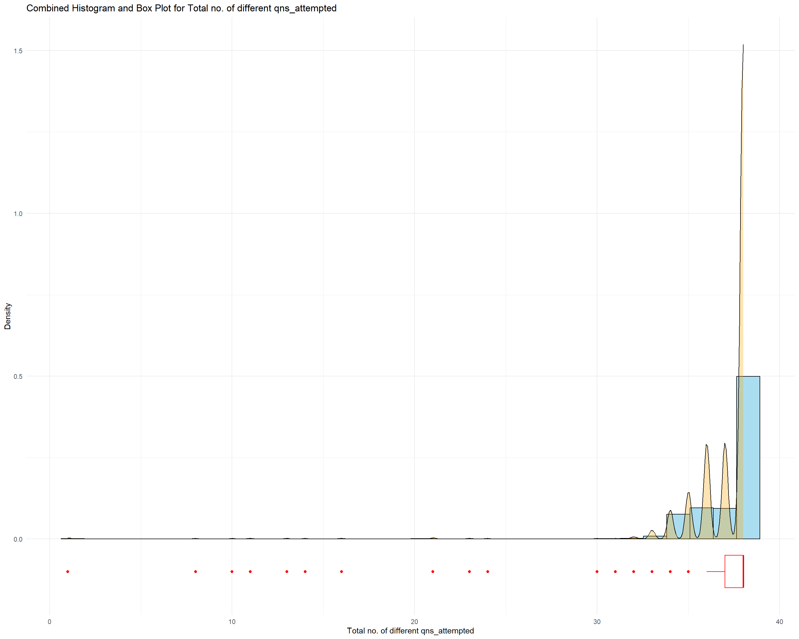
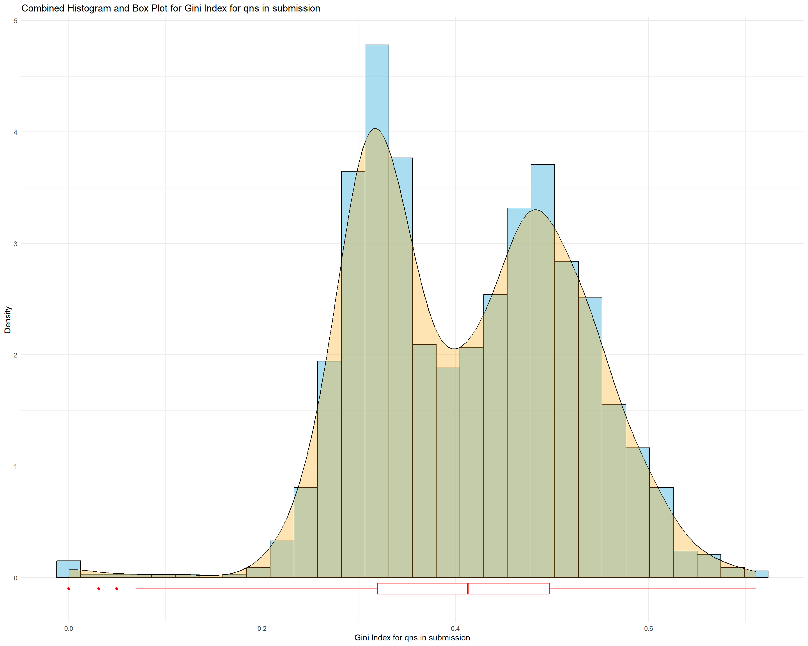

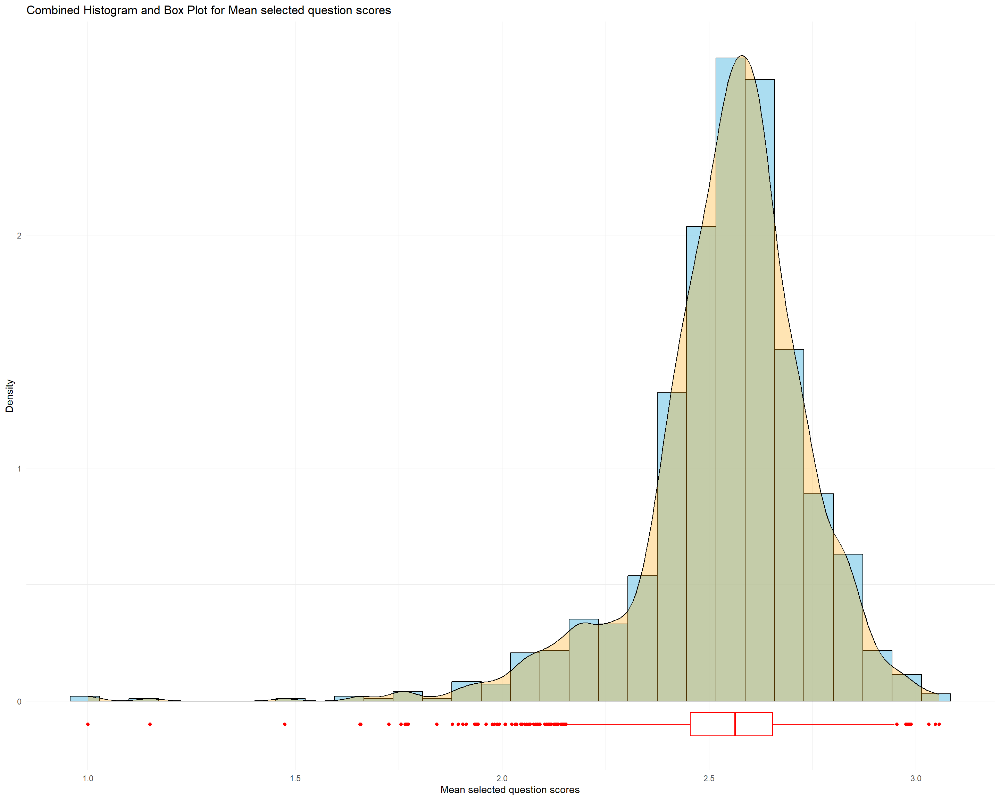
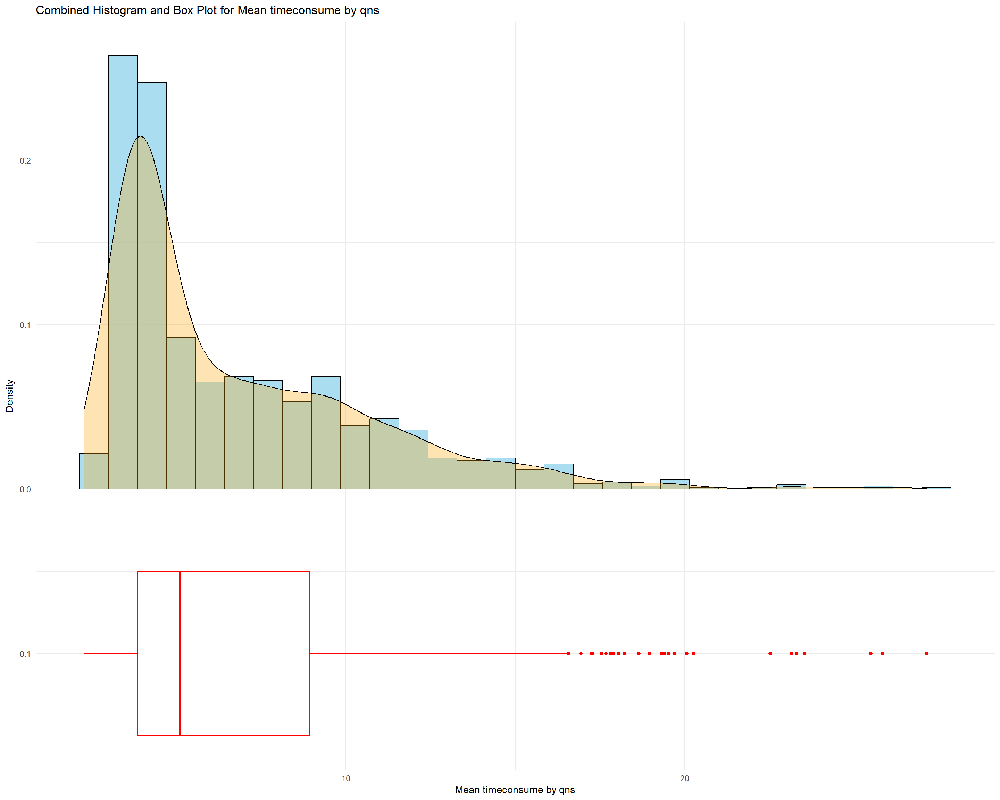
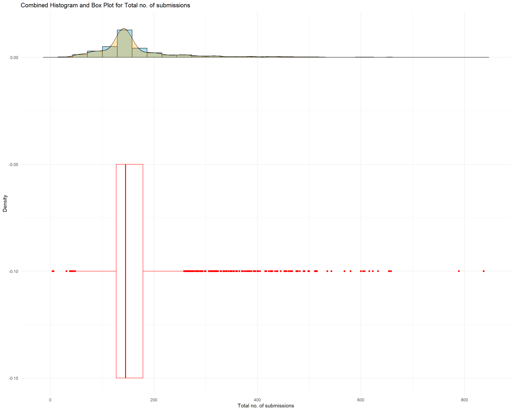
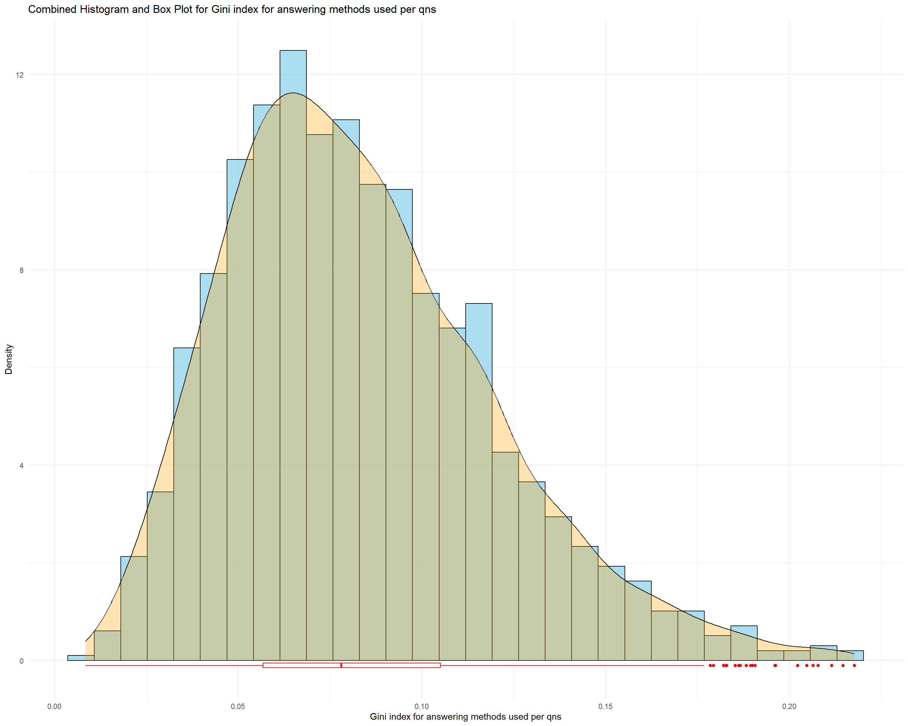
Check for high colinearity
SLM.cor <- cor(StudentLM_data[, 2:15])
corrplot(SLM.cor,
method = "ellipse",
tl.pos = "lt",
tl.col = "black",
order="hclust",
hclust.method = "ward.D",
addrect = 3)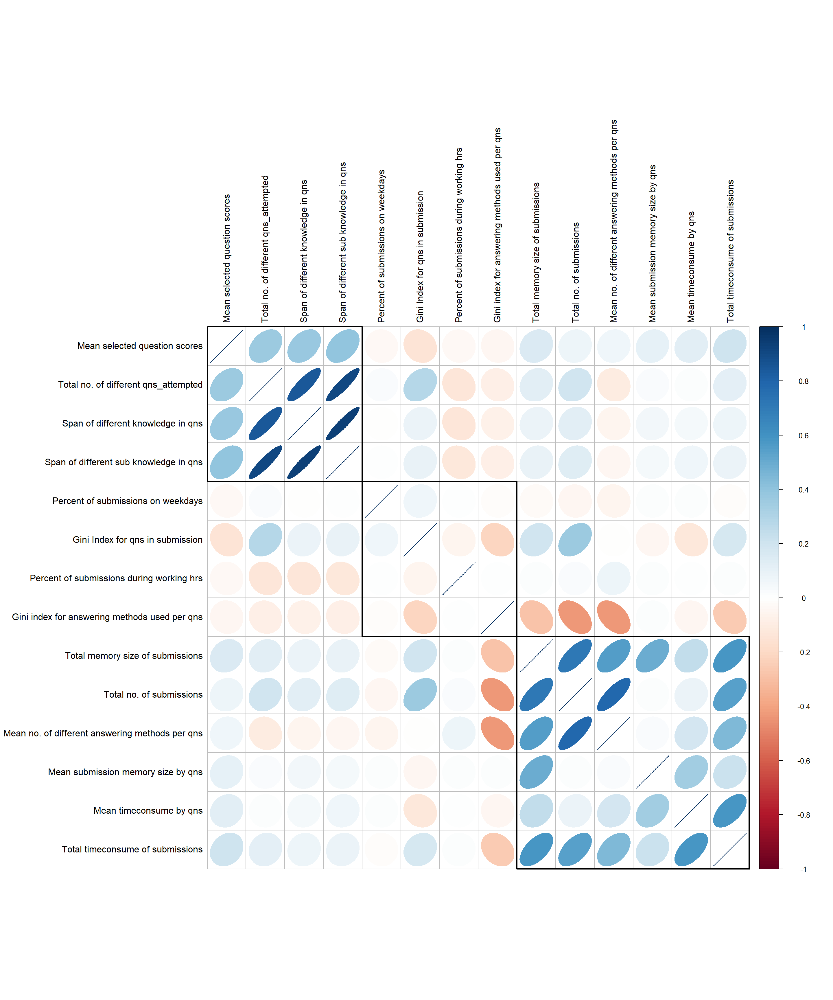
ggstatsplot::ggcorrmat(
data = StudentLM_data,
cor.vars = 2:15)Number of K-Means clusters
To determine the ideal number of clusters for K-means clustering on the recompiled learners’ learning mode features, a silhouette analysis and SSE elbow method are performed in the following code chunks.
Silhouette analysis
# Exclude non-numeric columns
StudentLM_data_numeric <- StudentLM_data %>%
select(-student_ID)
# Function to compute silhouette widths
silhouette_analysis <- function(data, max_clusters) {
avg_sil_widths <- numeric(max_clusters)
for (k in 2:max_clusters) {
# Perform k-means clustering
kmeans_result <- kmeans(data, centers = k, nstart = 25)
# Compute silhouette widths
sil <- silhouette(kmeans_result$cluster, dist(data))
# Calculate average silhouette width
avg_sil_widths[k] <- mean(sil[, 3])
}
return(avg_sil_widths)
}
# Determine the maximum number of clusters to test
max_clusters <- 12
# Perform silhouette analysis
avg_sil_widths <- silhouette_analysis(StudentLM_data_numeric, max_clusters)
# Plot the average silhouette widths
plot(1:max_clusters, avg_sil_widths, type = "b", pch = 19, frame = FALSE,
xlab = "Number of clusters", ylab = "Average silhouette width",
main = "Silhouette Analysis for Determining Optimal Number of Clusters")
# Highlight the optimal number of clusters
optimal_clusters <- which.max(avg_sil_widths)
points(optimal_clusters, avg_sil_widths[optimal_clusters], col = "red", pch = 19)SSE-Elbow method
# Function to compute SSE for different numbers of clusters
compute_sse <- function(data, max_clusters) {
sse <- numeric(max_clusters)
for (k in 1:max_clusters) {
# Perform k-means clustering
kmeans_result <- kmeans(data, centers = k, nstart = 25)
# Compute SSE
sse[k] <- kmeans_result$tot.withinss
}
return(sse)
}
# Determine the maximum number of clusters to test
max_clusters <- 18
# Compute SSE for each number of clusters
sse_values <- compute_sse(StudentLM_data_numeric, max_clusters)
# Plot SSE against number of clusters
plot(1:max_clusters, sse_values, type = "b", pch = 19, frame = FALSE,
xlab = "Number of clusters", ylab = "SSE",
main = "Elbow Method for Optimal Number of Clusters")
# Add text for elbow point
elbow_point <- which.min(diff(sse_values)) + 1
text(elbow_point, sse_values[elbow_point], labels = paste("Elbow Point:", elbow_point), pos = 4, col = "red")K Means clustering and Visualisation
K Means clustering is then performed on the recompiled learners’ learning mode features with the number of clusters set as 2 based on the above results, in the following code chunk
# Drop the student_ID column
clustering_data <- StudentLM_data %>%
select(-student_ID)
# Standardize the data
clustering_data_scaled <- scale(clustering_data)
# Perform k-means clustering
set.seed(123) # For reproducibility
kmeans_result <- kmeans(clustering_data_scaled, centers = 2, nstart = 25)
# Add the cluster assignments to the original data
StudentLM_data$cluster <- kmeans_result$clusterThe first plot for visualisation of the K means cluster is the Principal Component Analysis (PCA) Plot, which gives an initial sensing of the separation of the clusters based on first 2 PCA components that rank the highest in distinctness amongst the features used. This is plotted with the following code chunk.
# Perform PCA
pca_result <- prcomp(StudentLM_data[-1], scale. = TRUE)
# Get PCA scores
pca_scores <- as.data.frame(predict(pca_result))
# Add cluster information to PCA scores
pca_scores$cluster <- factor(StudentLM_data$cluster)
# Plot PCA results with cluster color coding
pca_plot <- ggplot(pca_scores, aes(PC1, PC2, color = cluster)) +
geom_point(size = 3) +
scale_color_discrete(name = "Cluster") +
labs(x = "Principal Component 1", y = "Principal Component 2",
title = "PCA Plot of Clusters") +
theme_minimal()
# Display the plot
pca_plot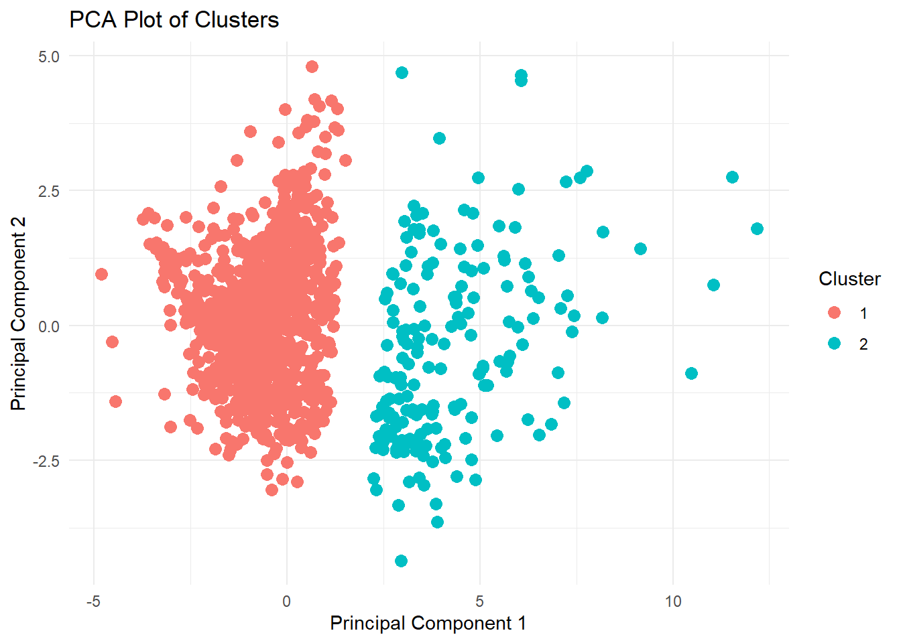
Based on the PCA plot, the clusters are visually clearly separated, suggesting that the clusters are distinct, especially in relation to the top 2 PCA components in the x and y-axis.
Next to visualise the distribution of the 2 clusters across all the features used for the K Means clustering, a parallel coordinate plot is used, with the following code chunk.
StudentLM_data_factor <- StudentLM_data
StudentLM_data_factor$cluster <- as.character(StudentLM_data_factor$cluster)
ggparcoord(data = StudentLM_data_factor,
columns = c(2:13),
groupColumn = 14,
scale = "uniminmax",
alphaLines = 0.2,
boxplot = TRUE,
title = "Parallel Coordinates Plot of Students' learning modes")+
theme(
plot.title = element_text(size = 20),
axis.text.x = element_text(angle = 30, hjust = 0.8, size = 18),
axis.text.y = element_text(size = 18),
axis.title.x = element_text(size = 18),
axis.title.y = element_text(size = 18),
legend.title = element_text(size = 18),
legend.text = element_text(size = 18)
)
ggparcoord(data = StudentLM_data_factor,
columns = c(2:13),
groupColumn = 14,
scale = "uniminmax",
alphaLines = 0.2,
boxplot = TRUE,
title = "Parallel Coordinates Split Plot of Students' learning modes")+
facet_wrap(~ cluster)+
theme(
plot.title = element_text(size = 20),
axis.text.x = element_text(angle = 30, hjust = 0.8, size = 18),
axis.text.y = element_text(size = 18),
axis.title.x = element_text(size = 18),
axis.title.y = element_text(size = 18),
legend.title = element_text(size = 18),
legend.text = element_text(size = 18)
)Based on the plot, there is varying degree of distinction in separation between the 2 clusters across different variables. The more distinct separation are in variables such as total timeconsume of answers, total memory size of answers, mean different answering methods per question, total answering attempts and question selection gini index, where cluster 2 tends to fare better in these metrics suggesting that perhaps cluster 2 may be the more hardworking learning mode among the 2.
An Alluvial plot is also used in the following code chunk for an alternative visualisation of the clustering, where variables are binned into 5 equally sized bins based on distribution of student_ID.
# Define a function to bin numerical variables based on the distribution of student_IDs
bin_variable_equal_ids <- function(x, bins = 5) {
n <- length(x)
quantile_ranks <- ceiling(rank(x, ties.method = "first") / (n / bins))
as.factor(quantile_ranks)
}
# Apply the binning function to numerical columns, excluding student_ID and cluster
StudentLM_data_binned <- StudentLM_data %>%
mutate(across(-c(student_ID, cluster), ~ bin_variable_equal_ids(., bins = 5)))
# Convert data to long format
StudentLM_data_long <- StudentLM_data_binned %>%
pivot_longer(cols = -c(student_ID, cluster), names_to = "variable", values_to = "value")
# Check rows with NA values
StudentLM_data_checkNA <- StudentLM_data_long %>%
filter(if_any(everything(), ~ is.na(.)))
glimpse(StudentLM_data_checkNA)Rows: 0
Columns: 4
$ student_ID <chr>
$ cluster <int>
$ variable <chr>
$ value <fct> # Ensure the 'cluster' variable is in discrete values (1 and 2)
StudentLM_data_long <- StudentLM_data_long %>%
mutate(cluster = as.factor(cluster))
# Ensure there are no NA values in the cluster column
StudentLM_data_long <- StudentLM_data_long %>%
filter(!is.na(cluster))
# Create the alluvial plot
ggplot(StudentLM_data_long,
aes(x = variable, stratum = value, alluvium = student_ID)) +
# geom_flow(stat = "alluvium", lode.guidance = "forward", color = "white") +
geom_alluvium(aes(fill = cluster)) +
geom_stratum() +
scale_x_discrete(limits = unique(StudentLM_data_long$variable), expand = c(0.5, 0.1)) +
theme_minimal() +
labs(title = "Alluvial Plot of Learning Mode Clusters",
x = "Variables",
y = "Count") +
theme(axis.text.x = element_text(angle = 45, hjust = 1, size = 8)) # axis.text.y = element_text(size = 8), plot.title = element_text(size = 12), legend.title = element_text(size = 10), legend.text = element_text(size = 8), axis.title.x = element_text(size = 10), axis.title.y = element_text(size = 10), plot.margin = unit(c(1, 1, 1, 1), "cm"))Number of clusters and method for Hierarchical Clustering
As an alternative to K means, hierarchical clustering is also considered, and initiates with mapping the data frame into a data matrix, and thereby using the dend_expend function to determine the best clustering method.
StudentLM_data1 <- StudentLM_data %>%
select(-cluster)
# mutate(across(everything(), scale))
row.names(StudentLM_data1) <- StudentLM_data$student_ID
#StudentLM_data1 <- select(StudentLM_data1, c(1, 2:13))
StudentLM_data_matrix1 <- data.matrix(StudentLM_data1)
StudentLM_data_d1 <- dist(
normalize(StudentLM_data_matrix1[, -c(1)]),
method = "euclidean")
dend_expend(StudentLM_data_d1)[[3]] dist_methods hclust_methods optim
1 unknown ward.D 0.2669653
2 unknown ward.D2 0.3637016
3 unknown single 0.7571795
4 unknown complete 0.5926958
5 unknown average 0.8032403
6 unknown mcquitty 0.6096951
7 unknown median 0.6870881
8 unknown centroid 0.7422864Based on the output above, the average method will be the most optimal.
A silhoutte plot in the same approach as before is also done with the following code chunk to determine the optimal number of clusters to achieve higher distinction in cluster separation for hierarchical clustering.
StudentLM_data_clust <- hclust(StudentLM_data_d1, method = "average")
num_k <- find_k(StudentLM_data_clust)
plot(num_k)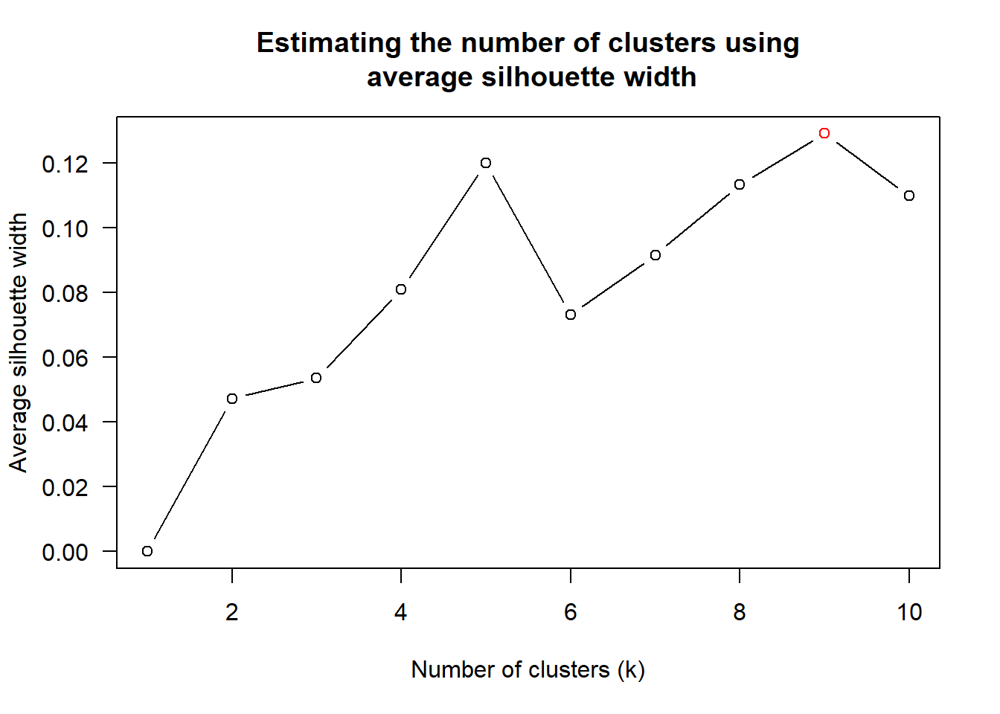
Based on the output above, 9 clusters were identified to be optimal in terms of distinction in separation.
Hierarchical Clustering and Visualisation
Now using the 2 parameters, the hierarchical clustering using the same visualisations of PCA, Parallel Coordinate Plots and Alluvial Plots are created with the following code chunks.
# Cut the tree into a 9 clusters
cluster_cut <- cutree(StudentLM_data_clust, k = 9)
# Add the cluster assignment to the data
StudentLM_data1_n <- normalize(StudentLM_data1)
StudentLM_data1_n$cluster_hc <- as.factor(cluster_cut)
glimpse(StudentLM_data1_n)Rows: 1,364
Columns: 14
$ student_ID <chr> "0088dc183f73c83f763…
$ `Percent of submissions on weekdays` <dbl> 0.9488372, 0.8875000…
$ `Percent of submissions during working hrs` <dbl> 0.14883721, 0.104166…
$ `Total no. of different qns_attempted` <dbl> 1.0000000, 1.0000000…
$ `Gini Index for qns in submission` <dbl> 0.66600804, 0.555479…
$ `Mean selected question scores` <dbl> 0.6515011, 0.6160606…
$ `Mean submission memory size by qns` <dbl> 0.15476836, 0.288330…
$ `Mean timeconsume by qns` <dbl> 0.05099268, 0.406939…
$ `Total no. of submissions` <dbl> 0.25330132, 0.283313…
$ `Mean no. of different answering methods per qns` <dbl> 0.51492537, 0.649253…
$ `Gini index for answering methods used per qns` <dbl> 0.16432955, 0.294312…
$ `Total memory size of submissions` <dbl> 0.06864675, 0.139881…
$ `Total timeconsume of submissions` <dbl> 0.043706487, 0.14211…
$ cluster_hc <fct> 1, 1, 1, 1, 1, 1, 1,…# Perform PCA
pca_result <- prcomp(StudentLM_data1_n[, -c(1, 14)], scale = FALSE)
pca_df <- as.data.frame(pca_result$x[, 1:2]) # Example: Extracting the first two principal components
# Add cluster information to PCA scores
pca_scores$cluster_hc <- factor(StudentLM_data1_n$cluster_hc)
# Plot PCA with cluster_hc
ggplot(pca_df, aes(x = PC1, y = PC2, color = factor(StudentLM_data1_n$cluster_hc))) +
geom_point() +
labs(title = "PCA Plot with Clustering", x = "Principal Component 1", y = "Principal Component 2") +
theme_minimal()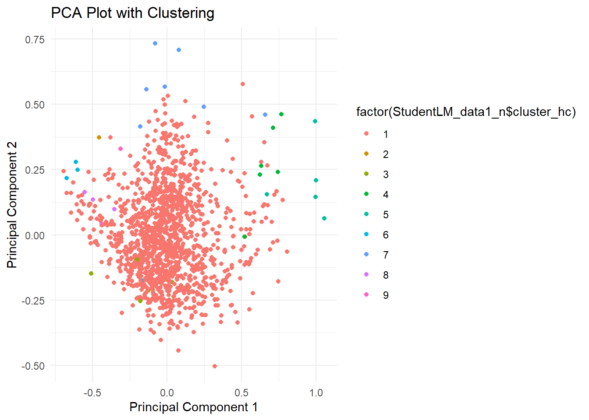
ggparcoord(data = StudentLM_data1_n,
columns = c(2:13),
groupColumn = 14,
scale = "uniminmax",
alphaLines = 0.2,
boxplot = TRUE,
title = "Parallel Coordinates Plot of Students' learning modes")+
theme(axis.text.x = element_text(angle = 30))
# Define a function to bin numerical variables based on the distribution of student_IDs
bin_variable_equal_ids <- function(x, bins = 5) {
n <- length(x)
quantile_ranks <- ceiling(rank(x, ties.method = "first") / (n / bins))
as.factor(quantile_ranks)
}
# Apply the binning function to numerical columns, excluding student_ID and cluster
StudentLM_data_binned1 <- StudentLM_data1_n %>%
mutate(across(-c(student_ID, cluster_hc), ~ bin_variable_equal_ids(., bins = 5)))
# Convert data to long format
StudentLM_data_long1 <- StudentLM_data_binned1 %>%
pivot_longer(cols = -c(student_ID, cluster_hc), names_to = "variable", values_to = "value")
# Check rows with NA values
StudentLM_data_checkNA <- StudentLM_data_long1 %>%
filter(if_any(everything(), ~ is.na(.)))
glimpse(StudentLM_data_checkNA)Rows: 0
Columns: 4
$ student_ID <chr>
$ cluster_hc <fct>
$ variable <chr>
$ value <fct> # Ensure the 'cluster' variable is in discrete values (1 and 2)
StudentLM_data_long1 <- StudentLM_data_long1 %>%
mutate(cluster_hc = as.factor(cluster_hc))
# Ensure there are no NA values in the cluster column
StudentLM_data_long1 <- StudentLM_data_long1 %>%
filter(!is.na(cluster_hc))
# Create the alluvial plot
ggplot(StudentLM_data_long1,
aes(x = variable, stratum = value, alluvium = student_ID)) +
# geom_flow(stat = "alluvium", lode.guidance = "forward", color = "white") +
geom_alluvium(aes(fill = cluster_hc)) +
geom_stratum() +
scale_x_discrete(limits = unique(StudentLM_data_long$variable), expand = c(0.5, 0.1)) +
theme_minimal() +
labs(title = "Alluvial Plot of Learning Mode Clusters",
x = "Variables",
y = "Count") +
theme(axis.text.x = element_text(angle = 45, hjust = 1, size = 8),
axis.text.y = element_text(size = 8),
plot.title = element_text(size = 12),
legend.title = element_text(size = 10),
legend.text = element_text(size = 8),
axis.title.x = element_text(size = 10),
axis.title.y = element_text(size = 10),
plot.margin = unit(c(1, 1, 1, 1), "cm"))From the plots above, it can be observed that although hierarchical clustering could give a higher number of optimum clusters, the separation and distinction, is much worse in comparison with the optimum of 2 clusters using K-means. Hence for subsequent analysis, the K-means clustering results will be used instead.
Knowledge Acquisition
Based on the given data, the relevant features that best defines a learner’s knowledge acquisition is assessed to be as follows:
- Knowledge mastery determined by (a) overall sum of highest actual score for each question attempted, (b) sum of highest actual score of each question by knowledge area
- Knowledge mastery determined by combined metric defined in Task 1, (a) overall total mastery points, (d) sum of mastery points by knowledge area
- correct answering rate determined by (a) percentage of answers absolutely correct, (b) total number of questions with answers absolutely correct and partially correct
Feature engineering
Group By Student ID
The following variables will be obtained with the code chunks below in preparation for visualisation and analysis of Knowledge Acquisition with respect to the various learning modes.
- Knowledge mastery by actual score
- overall sum of highest actual score for each question attempted and
- sum of highest actual score of each question by knowledge area
- Knowledge mastery by mastery points
Recap on Mastery Point metric from task 1:
- Proportion of absolutely and partially correct attempts: - absolutely correct attempts - award 1 pt - partially correct attempts - award (actual_score / question_score) - normalise attempts across questions - uses (total point / total attempts)
- Use of more than 1 method per question - multiply by no. of methods if absolutely correct attempt submitted for that question
- overall total mastery points
- sum of mastery points by knowledge group
- Correct answering rate
- percentage of answers absolutely correct,
- total number of questions with answers absolutely correct and partially correct
StudentKA_data <- merged_data %>%
group_by(student_ID) %>%
summarize(
# Part (a): Sum of highest actual score for each question attempted
`Sum of overall highest submission scores` = sum(sapply(unique(title_ID), function(x) {
max(merged_data[merged_data$title_ID == x & merged_data$student_ID == cur_group()$student_ID, "actual_score"])
})),
# Part (b): Sum of highest actual score for each knowledge area
`Sum of overall highest submission scores for b3C9s knowledge` = sum(sapply(unique(title_ID), function(x) {
max(merged_data[merged_data$title_ID == x & merged_data$student_ID == cur_group()$student_ID, "actual_score"] * merged_data[merged_data$title_ID == x & merged_data$student_ID == cur_group()$student_ID, 29])
})),
`Sum of overall highest submission scores for g7R2j knowledge` = sum(sapply(unique(title_ID), function(x) {
max(merged_data[merged_data$title_ID == x & merged_data$student_ID == cur_group()$student_ID, "actual_score"] * merged_data[merged_data$title_ID == x & merged_data$student_ID == cur_group()$student_ID, 30])
})),
`Sum of overall highest submission scores for k4W1c knowledge` = sum(sapply(unique(title_ID), function(x) {
max(merged_data[merged_data$title_ID == x & merged_data$student_ID == cur_group()$student_ID, "actual_score"] * merged_data[merged_data$title_ID == x & merged_data$student_ID == cur_group()$student_ID, 31])
})),
`Sum of overall highest submission scores for m3D1v knowledge` = sum(sapply(unique(title_ID), function(x) {
max(merged_data[merged_data$title_ID == x & merged_data$student_ID == cur_group()$student_ID, "actual_score"] * merged_data[merged_data$title_ID == x & merged_data$student_ID == cur_group()$student_ID, 32])
})),
`Sum of overall highest submission scores for r8S3g knowledge` = sum(sapply(unique(title_ID), function(x) {
max(merged_data[merged_data$title_ID == x & merged_data$student_ID == cur_group()$student_ID, "actual_score"] * merged_data[merged_data$title_ID == x & merged_data$student_ID == cur_group()$student_ID, 33])
})),
`Sum of overall highest submission scores for s8Y2f knowledge` = sum(sapply(unique(title_ID), function(x) {
max(merged_data[merged_data$title_ID == x & merged_data$student_ID == cur_group()$student_ID, "actual_score"] * merged_data[merged_data$title_ID == x & merged_data$student_ID == cur_group()$student_ID, 34])
})),
`Sum of overall highest submission scores for t5V9e knowledge` = sum(sapply(unique(title_ID), function(x) {
max(merged_data[merged_data$title_ID == x & merged_data$student_ID == cur_group()$student_ID, "actual_score"] * merged_data[merged_data$title_ID == x & merged_data$student_ID == cur_group()$student_ID, 35])
})),
`Sum of overall highest submission scores for y9W5d knowledge` = sum(sapply(unique(title_ID), function(x) {
max(merged_data[merged_data$title_ID == x & merged_data$student_ID == cur_group()$student_ID, "actual_score"] * merged_data[merged_data$title_ID == x & merged_data$student_ID == cur_group()$student_ID, 36])
})),
# Part (c): Percentage of answers absolutely correct
`Percent of submissions absolutely correct` = (sum(state == "Absolutely_Correct") / n()) * 100,
# Part (d): Total number of questions with answers absolutely correct and partially correct
`No. of questions answered fully or partially correct` = length(unique(title_ID[state %in% c("Partially_Correct", "Absolutely_Correct")]))
)
glimpse(StudentKA_data)# Assign points to attempts based on state
adjusted_scores <- merged_data %>%
mutate(points = case_when(
state == "Absolutely_Correct" ~ 1,
state == "Partially_Correct" ~ actual_score / question_score,
TRUE ~ 0 # default case for any unexpected states
))
# Assign points to title_IDs per student factoring in normalisation and multiple methods used
mastery_scores1 <- adjusted_scores %>%
group_by(student_ID, title_ID, knowledge, class) %>%
summarise(
total_points = sum(points),
total_attempts = n(),
unique_methods = n_distinct(method),
absolutely_correct_methods = sum(points == 1)
) %>%
mutate(
adjusted_points = total_points / total_attempts,
adjusted_points = adjusted_points * ifelse(absolutely_correct_methods > 0, unique_methods, 1)
)
glimpse(mastery_scores1)unique(mastery_scores1$knowledge)# Combine the adjusted score with knowledge-transposed titleInfo dataframe
mastery_scores2 <- df_TitleInfo_gp %>%
distinct(title_ID, .keep_all = TRUE) %>%
left_join(mastery_scores1, by = "title_ID") %>%
rename(knowledge = knowledge.x) %>%
select(-score,
-knowledge.y)
glimpse(mastery_scores2)# Summing up points for Overall and Specific Knowledge Mastery for each Student
mastery_scores <- mastery_scores2 %>%
group_by(student_ID) %>%
summarize(
# Part (a): Sum of total points across all questions
`Sum of points Overall` = sum(adjusted_points),
# Part (b): Sum of highest actual score for each knowledge area
`Sum of points for b3C9s knowledge` = sum(case_when(
b3C9s == 1 ~ adjusted_points,
TRUE ~ 0
)),
`Sum of points for g7R2j knowledge` = sum(case_when(
g7R2j == 1 ~ adjusted_points,
TRUE ~ 0
)),
`Sum of points for k4W1c knowledge` = sum(case_when(
k4W1c == 1 ~ adjusted_points,
TRUE ~ 0
)),
`Sum of points for m3D1v knowledge` = sum(case_when(
m3D1v == 1 ~ adjusted_points,
TRUE ~ 0
)),
`Sum of points for r8S3g knowledge` = sum(case_when(
r8S3g == 1 ~ adjusted_points,
TRUE ~ 0
)),
`Sum of points for s8Y2f knowledge` = sum(case_when(
s8Y2f == 1 ~ adjusted_points,
TRUE ~ 0
)),
`Sum of points for t5V9e knowledge` = sum(case_when(
t5V9e == 1 ~ adjusted_points,
TRUE ~ 0
)),
`Sum of points for y9W5d knowledge` = sum(case_when(
y9W5d == 1 ~ adjusted_points,
TRUE ~ 0
))
)
glimpse(mastery_scores)# Compiling the knowledge acquisition metrics
StudentKA_data_merged <- left_join(StudentKA_data, mastery_scores, by = "student_ID")
saveRDS(StudentKA_data_merged, "StudentKA_data_merged.rds")StudentKA_data_merged <- read_rds("StudentKA_data_merged.rds")
glimpse(StudentKA_data_merged)Rows: 1,364
Columns: 21
$ student_ID <chr> "0088dc…
$ `Sum of overall highest submission scores` <dbl> 100, 10…
$ `Sum of overall highest submission scores for b3C9s knowledge` <dbl> 10, 10,…
$ `Sum of overall highest submission scores for g7R2j knowledge` <dbl> 15, 15,…
$ `Sum of overall highest submission scores for k4W1c knowledge` <dbl> 3, 3, 3…
$ `Sum of overall highest submission scores for m3D1v knowledge` <dbl> 36, 36,…
$ `Sum of overall highest submission scores for r8S3g knowledge` <dbl> 5, 5, 5…
$ `Sum of overall highest submission scores for s8Y2f knowledge` <dbl> 3, 3, 3…
$ `Sum of overall highest submission scores for t5V9e knowledge` <dbl> 10, 10,…
$ `Sum of overall highest submission scores for y9W5d knowledge` <dbl> 33, 33,…
$ `Percent of submissions absolutely correct` <dbl> 20.9302…
$ `No. of questions answered fully or partially correct` <int> 38, 38,…
$ `Sum of points Overall` <dbl> 38.7568…
$ `Sum of points for b3C9s knowledge` <dbl> 3.00000…
$ `Sum of points for g7R2j knowledge` <dbl> 6.74242…
$ `Sum of points for k4W1c knowledge` <dbl> 1.16666…
$ `Sum of points for m3D1v knowledge` <dbl> 14.0000…
$ `Sum of points for r8S3g knowledge` <dbl> 4.04700…
$ `Sum of points for s8Y2f knowledge` <dbl> 0.95238…
$ `Sum of points for t5V9e knowledge` <dbl> 3.96739…
$ `Sum of points for y9W5d knowledge` <dbl> 11.6666…# Define the function to create combined box plot and histogram
create_combined_plot <- function(data, variable) {
ggplot(data, aes_string(x = paste0("`", variable, "`"))) +
# Histogram
geom_histogram(aes(y = ..density..), bins = 30, fill = "skyblue", color = "black", alpha = 0.7) +
geom_density(alpha = 0.3, fill = "orange") +
# Box plot
geom_boxplot(aes(y = 0), width = 0.1, color = "red", position = position_nudge(y = -0.1)) +
theme_minimal() +
labs(x = variable, y = "Density") +
ggtitle(paste("Combined Histogram and Box Plot for", variable))
}
# Variables to plot
variables <- names(StudentKA_data_merged)[2:21]
# Create combined plots for each variable
plots <- lapply(variables, function(var) create_combined_plot(StudentKA_data_merged, var))
# Display the plots
for (p in plots) {
print(p)
}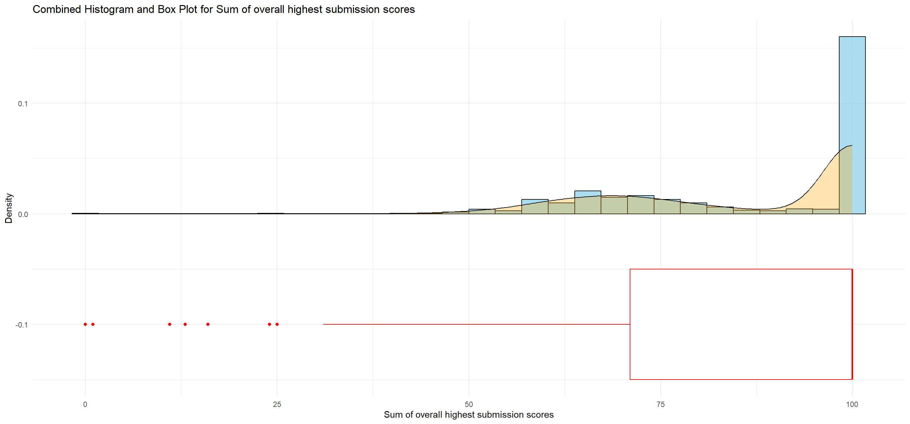
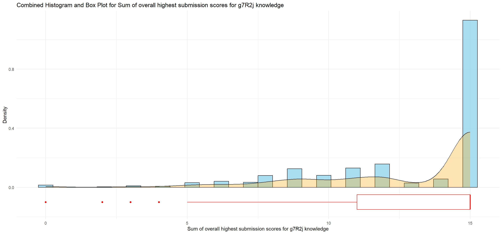
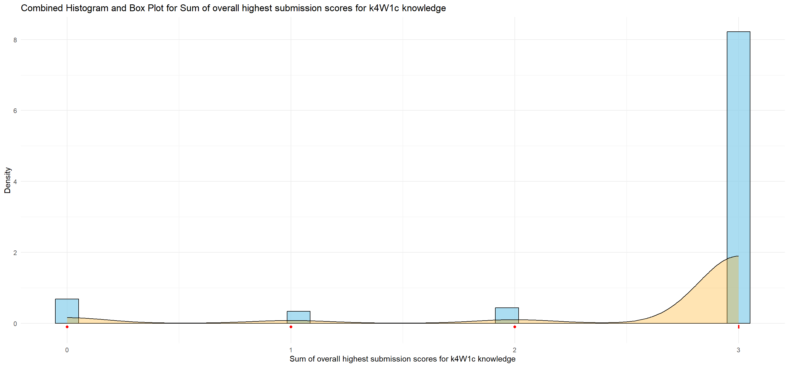
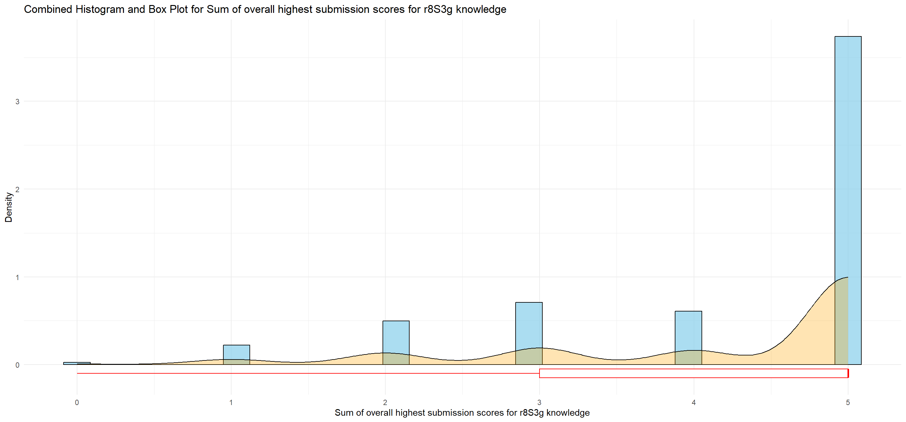

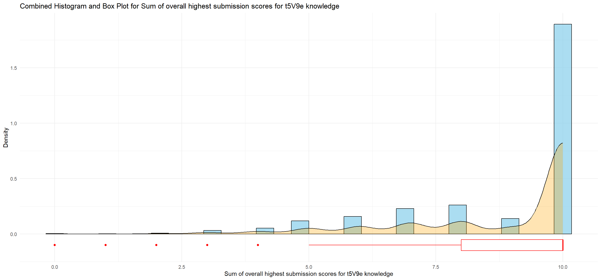
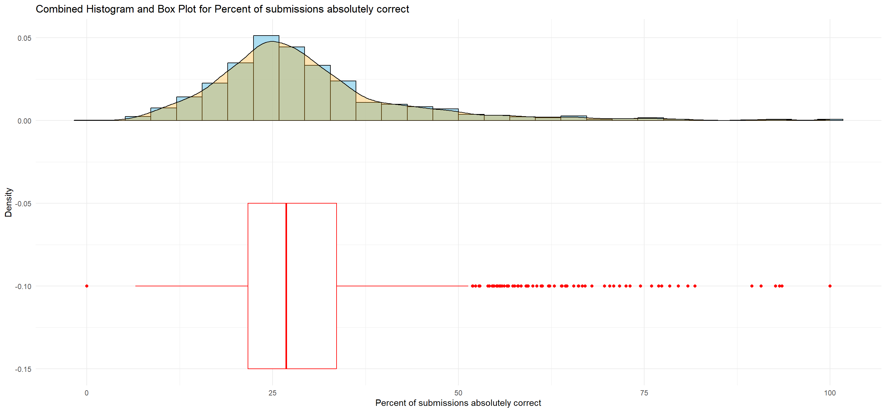
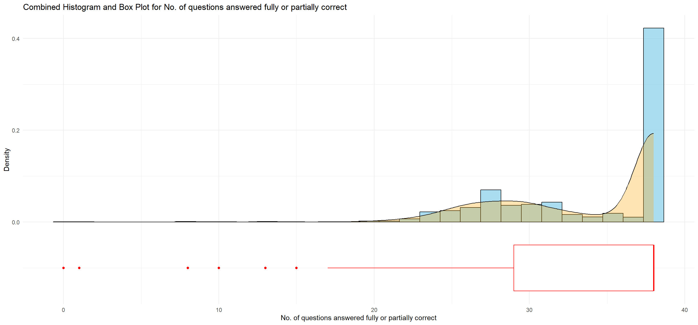
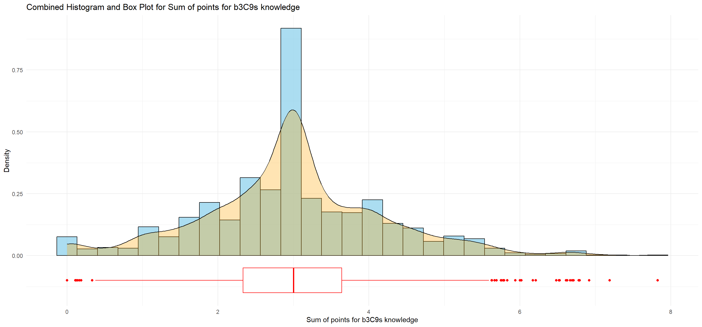
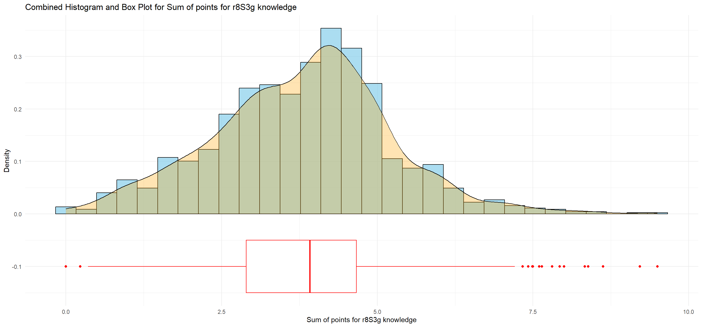
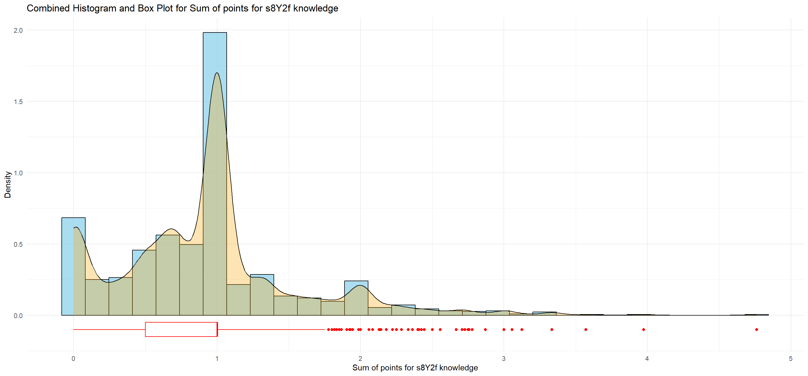
Merging Students’ Learning Modes with Knowledge Acqusition features
With the both data frames prepared, they will now be merged for the next sub-task which involves comparison of learners’ knowledge acquisition with respect to learning mode, and subsequently to identify patterns and relationships.
# Join the two dataframes on the column student_ID
StudentLMKA_data <- left_join(StudentLM_data, StudentKA_data_merged, by = "student_ID")
saveRDS(StudentLMKA_data, "StudentLMKA_data.rds")
glimpse(StudentLMKA_data)Rows: 1,364
Columns: 34
$ student_ID <chr> "0088dc…
$ `Percent of submissions on weekdays` <dbl> 94.8837…
$ `Percent of submissions during working hrs` <dbl> 14.8837…
$ `Total no. of different qns_attempted` <int> 38, 38,…
$ `Gini Index for qns in submission` <dbl> 0.47380…
$ `Mean selected question scores` <dbl> 2.33953…
$ `Mean submission memory size by qns` <dbl> 249.170…
$ `Mean timeconsume by qns` <dbl> 3.54370…
$ `Total no. of submissions` <int> 215, 24…
$ `Mean no. of different answering methods per qns` <dbl> 2.81578…
$ `Gini index for answering methods used per qns` <dbl> 0.04279…
$ `Total memory size of submissions` <dbl> 48164, …
$ `Total timeconsume of submissions` <dbl> 802, 25…
$ cluster <int> 1, 2, 2…
$ `Sum of overall highest submission scores` <dbl> 100, 10…
$ `Sum of overall highest submission scores for b3C9s knowledge` <dbl> 10, 10,…
$ `Sum of overall highest submission scores for g7R2j knowledge` <dbl> 15, 15,…
$ `Sum of overall highest submission scores for k4W1c knowledge` <dbl> 3, 3, 3…
$ `Sum of overall highest submission scores for m3D1v knowledge` <dbl> 36, 36,…
$ `Sum of overall highest submission scores for r8S3g knowledge` <dbl> 5, 5, 5…
$ `Sum of overall highest submission scores for s8Y2f knowledge` <dbl> 3, 3, 3…
$ `Sum of overall highest submission scores for t5V9e knowledge` <dbl> 10, 10,…
$ `Sum of overall highest submission scores for y9W5d knowledge` <dbl> 33, 33,…
$ `Percent of submissions absolutely correct` <dbl> 20.9302…
$ `No. of questions answered fully or partially correct` <int> 38, 38,…
$ `Sum of points Overall` <dbl> 38.7568…
$ `Sum of points for b3C9s knowledge` <dbl> 3.00000…
$ `Sum of points for g7R2j knowledge` <dbl> 6.74242…
$ `Sum of points for k4W1c knowledge` <dbl> 1.16666…
$ `Sum of points for m3D1v knowledge` <dbl> 14.0000…
$ `Sum of points for r8S3g knowledge` <dbl> 4.04700…
$ `Sum of points for s8Y2f knowledge` <dbl> 0.95238…
$ `Sum of points for t5V9e knowledge` <dbl> 3.96739…
$ `Sum of points for y9W5d knowledge` <dbl> 11.6666…Visualisation of Knowledge Aquisition by learning mode clusters
To visualise differences in the performance in total number of questions that had correct or partially correct answers, a ridgeline plot is utilised to compare the shape of distribution of students in both clusters on the same axes, using the following code chunk.
StudentLMKA_data$cluster <- as.factor(StudentLMKA_data$cluster)
# Plot
ggplot(StudentLMKA_data,
aes(x = `No. of questions answered fully or partially correct`,
y = cluster,
fill = factor(stat(quantile))
)) +
stat_density_ridges(
geom = "density_ridges_gradient",
calc_ecdf = TRUE,
quantiles = 4,
quantile_lines = TRUE) +
scale_fill_viridis_d(name = "Quartiles") +
theme_ridges()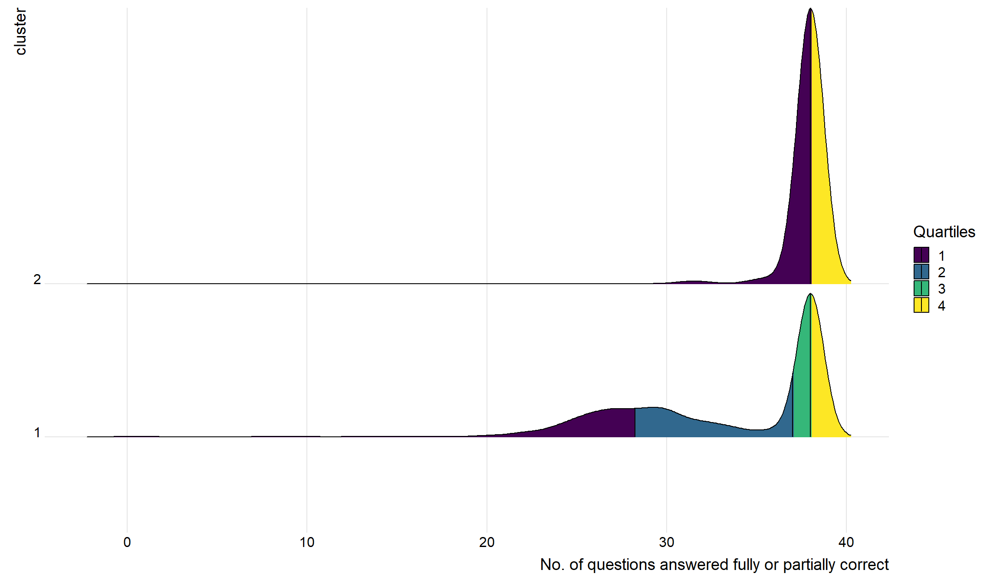
ggplot(StudentLMKA_data,
aes(x = `Sum of points Overall`,
y = cluster,
fill = factor(stat(quantile))
)) +
stat_density_ridges(
geom = "density_ridges_gradient",
calc_ecdf = TRUE,
quantiles = 4,
quantile_lines = TRUE) +
scale_fill_viridis_d(name = "Quartiles") +
theme_ridges()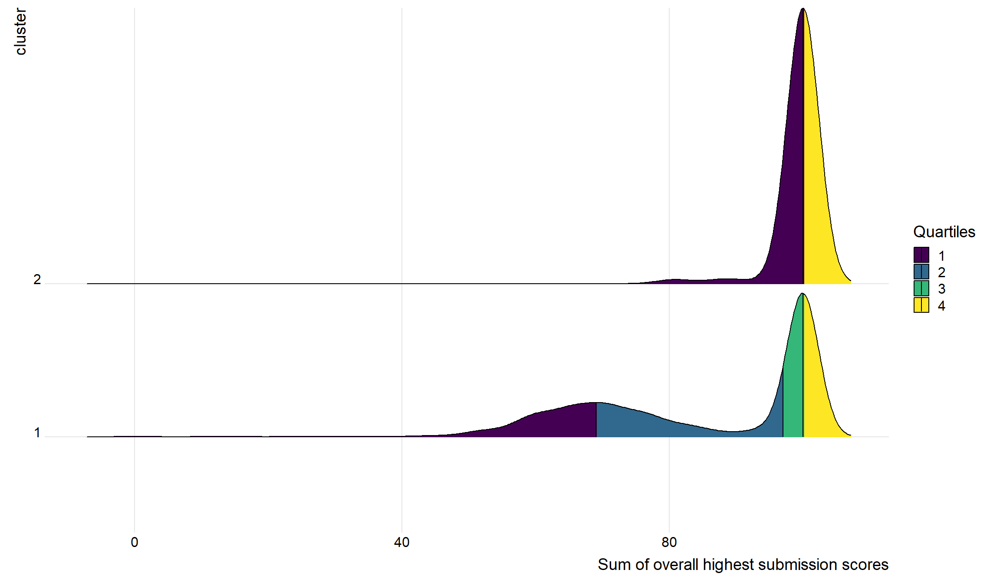
Cluster 2 has a sharper peak and more packed to the right which suggests that students in this cluster generally performed better, while for cluster 1 there is a 2nd smaller group of that performs even worse.
A multi faceted plot to compare the distribution of answering performance based on mastery points in respect to the 2 clusters across 6 knowledge areas is plotted with the following code chunk.
#| fig-width: 12
#| fig-height: 7
#a <-
ggplot(StudentLMKA_data,
aes(x = `Sum of points for b3C9s knowledge`,
y = cluster,
fill = factor(stat(quantile))
)) +
stat_density_ridges(
geom = "density_ridges_gradient",
calc_ecdf = TRUE,
quantiles = 4,
quantile_lines = TRUE) +
scale_fill_viridis_d(name = "Quartiles") +
theme_ridges()#b <-
ggplot(StudentLMKA_data,
aes(x = `Sum of points for g7R2j knowledge`,
y = cluster,
fill = factor(stat(quantile))
)) +
stat_density_ridges(
geom = "density_ridges_gradient",
calc_ecdf = TRUE,
quantiles = 4,
quantile_lines = TRUE) +
scale_fill_viridis_d(name = "Quartiles") +
theme_ridges()#c <-
ggplot(StudentLMKA_data,
aes(x = `Sum of points for m3D1v knowledge`,
y = cluster,
fill = factor(stat(quantile))
)) +
stat_density_ridges(
geom = "density_ridges_gradient",
calc_ecdf = TRUE,
quantiles = 4,
quantile_lines = TRUE) +
scale_fill_viridis_d(name = "Quartiles") +
theme_ridges()#d <-
ggplot(StudentLMKA_data,
aes(x = `Sum of points for r8S3g knowledge`,
y = cluster,
fill = factor(stat(quantile))
)) +
stat_density_ridges(
geom = "density_ridges_gradient",
calc_ecdf = TRUE,
quantiles = 4,
quantile_lines = TRUE) +
scale_fill_viridis_d(name = "Quartiles") +
theme_ridges()#e <-
ggplot(StudentLMKA_data,
aes(x = `Sum of points for t5V9e knowledge`,
y = cluster,
fill = factor(stat(quantile))
)) +
stat_density_ridges(
geom = "density_ridges_gradient",
calc_ecdf = TRUE,
quantiles = 4,
quantile_lines = TRUE) +
scale_fill_viridis_d(name = "Quartiles") +
theme_ridges()#f <-
ggplot(StudentLMKA_data,
aes(x = `Sum of points for y9W5d knowledge`,
y = cluster,
fill = factor(stat(quantile))
)) +
stat_density_ridges(
geom = "density_ridges_gradient",
calc_ecdf = TRUE,
quantiles = 4,
quantile_lines = TRUE) +
scale_fill_viridis_d(name = "Quartiles") +
theme_ridges()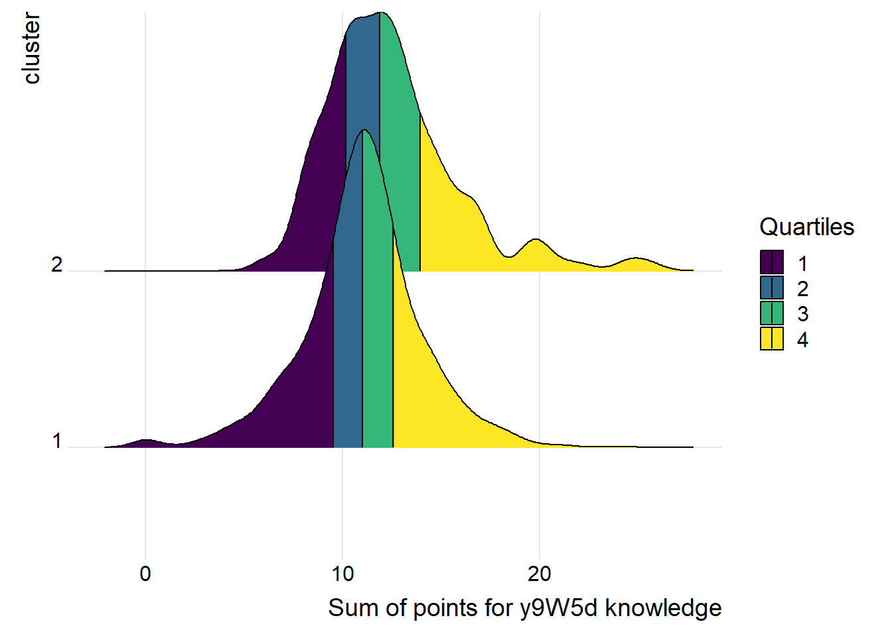
#g <-
ggplot(StudentLMKA_data,
aes(x = `Sum of points for k4W1c knowledge`,
y = cluster,
fill = factor(stat(quantile))
)) +
stat_density_ridges(
geom = "density_ridges_gradient",
calc_ecdf = TRUE,
quantiles = 4,
quantile_lines = TRUE) +
scale_fill_viridis_d(name = "Quartiles") +
theme_ridges()#h <-
ggplot(StudentLMKA_data,
aes(x = `Sum of points for s8Y2f knowledge`,
y = cluster,
fill = factor(stat(quantile))
)) +
stat_density_ridges(
geom = "density_ridges_gradient",
calc_ecdf = TRUE,
quantiles = 4,
quantile_lines = TRUE) +
scale_fill_viridis_d(name = "Quartiles") +
theme_ridges()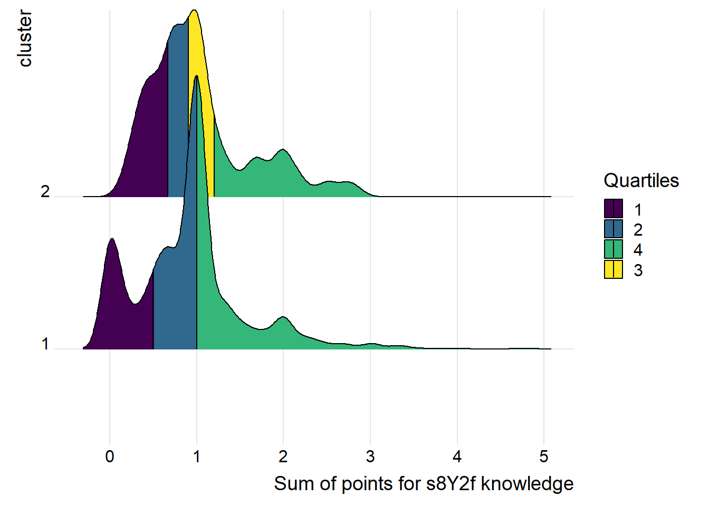
#(a + b) / (c + d) / (e + f) / (g + h)A multi faceted plot to compare the distribution of answering performance based on highest actual score in respect to the 2 clusters across 6 knowledge areas is also plotted with the following code chunk.
#a <-
ggplot(StudentLMKA_data,
aes(x = `Sum of overall highest submission scores for b3C9s knowledge`,
y = cluster,
fill = factor(stat(quantile))
)) +
stat_density_ridges(
geom = "density_ridges_gradient",
calc_ecdf = TRUE,
quantiles = 4,
quantile_lines = TRUE) +
scale_fill_viridis_d(name = "Quartiles") +
theme_ridges()#b <-
ggplot(StudentLMKA_data,
aes(x = `Sum of overall highest submission scores for g7R2j knowledge`,
y = cluster,
fill = factor(stat(quantile))
)) +
stat_density_ridges(
geom = "density_ridges_gradient",
calc_ecdf = TRUE,
quantiles = 4,
quantile_lines = TRUE) +
scale_fill_viridis_d(name = "Quartiles") +
theme_ridges()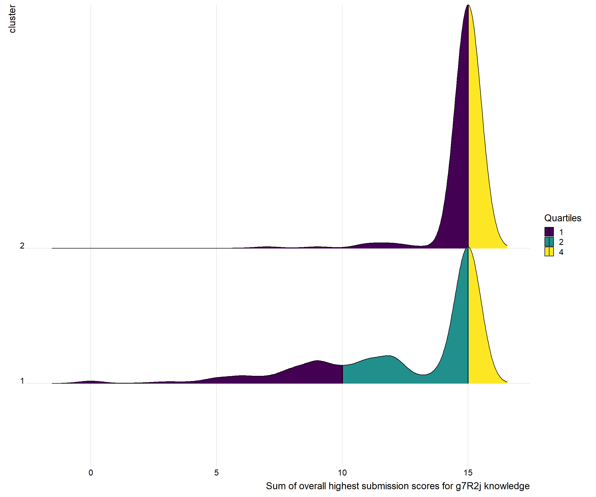
#c <-
ggplot(StudentLMKA_data,
aes(x = `Sum of overall highest submission scores for m3D1v knowledge`,
y = cluster,
fill = factor(stat(quantile))
)) +
stat_density_ridges(
geom = "density_ridges_gradient",
calc_ecdf = TRUE,
quantiles = 4,
quantile_lines = TRUE) +
scale_fill_viridis_d(name = "Quartiles") +
theme_ridges()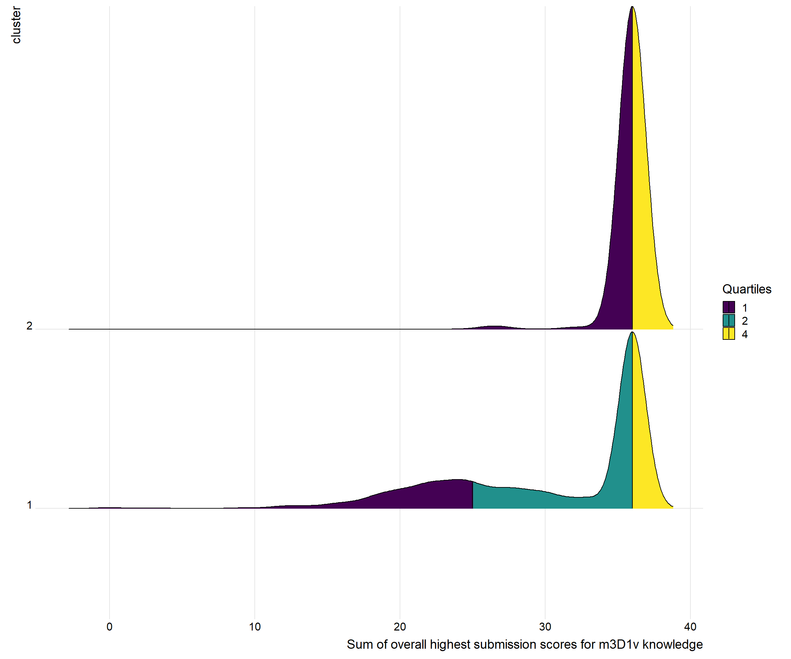
#d <-
ggplot(StudentLMKA_data,
aes(x = `Sum of overall highest submission scores for r8S3g knowledge`,
y = cluster,
fill = factor(stat(quantile))
)) +
stat_density_ridges(
geom = "density_ridges_gradient",
calc_ecdf = TRUE,
quantiles = 4,
quantile_lines = TRUE) +
scale_fill_viridis_d(name = "Quartiles") +
theme_ridges()#e <-
ggplot(StudentLMKA_data,
aes(x = `Sum of overall highest submission scores for t5V9e knowledge`,
y = cluster,
fill = factor(stat(quantile))
)) +
stat_density_ridges(
geom = "density_ridges_gradient",
calc_ecdf = TRUE,
quantiles = 4,
quantile_lines = TRUE) +
scale_fill_viridis_d(name = "Quartiles") +
theme_ridges()#f <-
ggplot(StudentLMKA_data,
aes(x = `Sum of overall highest submission scores for y9W5d knowledge`,
y = cluster,
fill = factor(stat(quantile))
)) +
stat_density_ridges(
geom = "density_ridges_gradient",
calc_ecdf = TRUE,
quantiles = 4,
quantile_lines = TRUE) +
scale_fill_viridis_d(name = "Quartiles") +
theme_ridges()#g <-
ggplot(StudentLMKA_data,
aes(x = `Sum of overall highest submission scores for k4W1c knowledge`,
y = cluster,
fill = factor(stat(quantile))
)) +
stat_density_ridges(
geom = "density_ridges_gradient",
calc_ecdf = TRUE,
quantiles = 4,
quantile_lines = TRUE) +
scale_fill_viridis_d(name = "Quartiles") +
theme_ridges()#h <-
ggplot(StudentLMKA_data,
aes(x = `Sum of overall highest submission scores for s8Y2f knowledge`,
y = cluster,
fill = factor(stat(quantile))
)) +
stat_density_ridges(
geom = "density_ridges_gradient",
calc_ecdf = TRUE,
quantiles = 4,
quantile_lines = TRUE) +
scale_fill_viridis_d(name = "Quartiles") +
theme_ridges()#(a + b) / (c + d) / (e + f) / (g + h)The findings are highly congruent with the earlier ridge plost, which found that cluster 2 had performed better with a sharper peak and more concentration of learners to the right, where as cluster 1 had small pockets of learners to the left instead.
A statistical violin plot to perform both a mathematical 2 sample mean test in tandem with a visual analysis of the difference in the distribution of the students’ total actual score in the answering records in respect of the 2 clusters is plot with the following code chunk.
ggbetweenstats(
data = StudentLMKA_data,
x = cluster,
y = `Sum of overall highest submission scores`,
type = "np",
messages = FALSE
)
Based on the figures, the p-value is extremely small which suggest that there is strong statistical significance between the 2 clusters in the performance of total actual score of students in each cluster, wherein cluster 2 fared better than cluster 1, it also shows that cluster 2 is much smaller than cluster 1.
Lastly a similar statistical violin plot to analyse the differences in percentage of answers that were absolutely correct in respect of the 2 clusters is plot in the following code chunk.
ggbetweenstats(
data = StudentLMKA_data,
x = cluster,
y = `Percent of submissions absolutely correct`,
type = "np",
messages = FALSE
)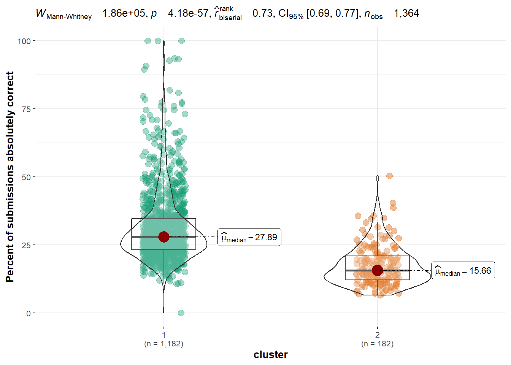
Based on the figures, the p-value is extremely small which suggest that there is strong statistical significance between the 2 clusters in the performance of total actual score of students in each cluster, wherein surprisingly, cluster 1 had fared better than cluster 2, cluster 2 had a smaller spread and more concentrated compared to cluster 1.
ggbetweenstats(
data = StudentLMKA_data,
x = cluster,
y = `Sum of points Overall`,
type = "np",
messages = FALSE
)
Based on the figures, the p-value is extremely small which suggest that there is strong statistical significance between the 2 clusters in the performance of mastery points of students in each cluster, wherein, cluster 2 had fared better than cluster 1.
Combining the 3 findings, a sensible explanation is that cluster 2 students likely submitted more attempts in order to get a higher actual score and use a wider variety of answering methods than cluster 1 .
Multivariate analysis of variables
As an alternative perspective, the learning mode features are now plot on a multi-linear regression model against the knowledge acquisition features of highest actual score and mastery points in the following code chunks.
# Multi linear regression model for sum_highest_actual_score and sum_points overall
model1 <- lm(`Sum of overall highest submission scores` ~
`Percent of submissions on weekdays`+
`Percent of submissions during working hrs`+
`Total no. of different qns_attempted`+
`Gini Index for qns in submission`+
`Mean selected question scores`+
`Mean submission memory size by qns`+
`Mean timeconsume by qns`+
`Total no. of submissions`+
`Mean no. of different answering methods per qns`+
`Gini index for answering methods used per qns`+
`Total memory size of submissions`+
`Total timeconsume of submissions`, data = StudentLMKA_data)
model2 <- lm(`Sum of points Overall` ~
`Percent of submissions on weekdays`+
`Percent of submissions during working hrs`+
`Total no. of different qns_attempted`+
`Gini Index for qns in submission`+
`Mean selected question scores`+
`Mean submission memory size by qns`+
`Mean timeconsume by qns`+
`Total no. of submissions`+
`Mean no. of different answering methods per qns`+
`Gini index for answering methods used per qns`+
`Total memory size of submissions`+
`Total timeconsume of submissions`, data = StudentLMKA_data)
ggcoefstats(model1,
output = "plot") +
theme(
plot.title = element_text(size = 22),
axis.title = element_text(size = 20),
axis.text = element_text(size = 20),
legend.title = element_text(size = 22),
legend.text = element_text(size = 20)
)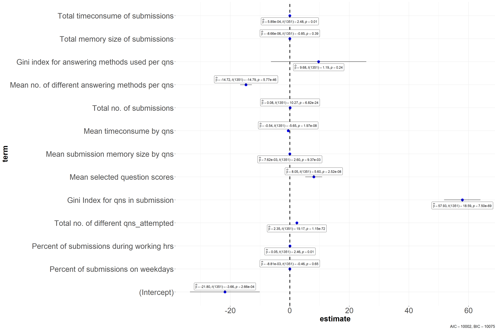
ggcoefstats(model2,
output = "plot") +
theme(
plot.title = element_text(size = 22),
axis.title = element_text(size = 20),
axis.text = element_text(size = 20),
legend.title = element_text(size = 22),
legend.text = element_text(size = 20)
)model3 <- lm(`Sum of points for b3C9s knowledge` ~
`Percent of submissions on weekdays`+
`Percent of submissions during working hrs`+
`Total no. of different qns_attempted`+
`Gini Index for qns in submission`+
`Mean selected question scores`+
`Mean submission memory size by qns`+
`Mean timeconsume by qns`+
`Total no. of submissions`+
`Mean no. of different answering methods per qns`+
`Gini index for answering methods used per qns`+
`Total memory size of submissions`+
`Total timeconsume of submissions`, data = StudentLMKA_data)
model4 <- lm(`Sum of points for g7R2j knowledge` ~
`Percent of submissions on weekdays`+
`Percent of submissions during working hrs`+
`Total no. of different qns_attempted`+
`Gini Index for qns in submission`+
`Mean selected question scores`+
`Mean submission memory size by qns`+
`Mean timeconsume by qns`+
`Total no. of submissions`+
`Mean no. of different answering methods per qns`+
`Gini index for answering methods used per qns`+
`Total memory size of submissions`+
`Total timeconsume of submissions`, data = StudentLMKA_data)
model5 <- lm(`Sum of points for k4W1c knowledge` ~
`Percent of submissions on weekdays`+
`Percent of submissions during working hrs`+
`Total no. of different qns_attempted`+
`Gini Index for qns in submission`+
`Mean selected question scores`+
`Mean submission memory size by qns`+
`Mean timeconsume by qns`+
`Total no. of submissions`+
`Mean no. of different answering methods per qns`+
`Gini index for answering methods used per qns`+
`Total memory size of submissions`+
`Total timeconsume of submissions`, data = StudentLMKA_data)
model6 <- lm(`Sum of points for m3D1v knowledge` ~
`Percent of submissions on weekdays`+
`Percent of submissions during working hrs`+
`Total no. of different qns_attempted`+
`Gini Index for qns in submission`+
`Mean selected question scores`+
`Mean submission memory size by qns`+
`Mean timeconsume by qns`+
`Total no. of submissions`+
`Mean no. of different answering methods per qns`+
`Gini index for answering methods used per qns`+
`Total memory size of submissions`+
`Total timeconsume of submissions`, data = StudentLMKA_data)
model7 <- lm(`Sum of points for r8S3g knowledge` ~
`Percent of submissions on weekdays`+
`Percent of submissions during working hrs`+
`Total no. of different qns_attempted`+
`Gini Index for qns in submission`+
`Mean selected question scores`+
`Mean submission memory size by qns`+
`Mean timeconsume by qns`+
`Total no. of submissions`+
`Mean no. of different answering methods per qns`+
`Gini index for answering methods used per qns`+
`Total memory size of submissions`+
`Total timeconsume of submissions`, data = StudentLMKA_data)
model8 <- lm(`Sum of points for s8Y2f knowledge` ~
`Percent of submissions on weekdays`+
`Percent of submissions during working hrs`+
`Total no. of different qns_attempted`+
`Gini Index for qns in submission`+
`Mean selected question scores`+
`Mean submission memory size by qns`+
`Mean timeconsume by qns`+
`Total no. of submissions`+
`Mean no. of different answering methods per qns`+
`Gini index for answering methods used per qns`+
`Total memory size of submissions`+
`Total timeconsume of submissions`, data = StudentLMKA_data)
model9 <- lm(`Sum of points for t5V9e knowledge` ~
`Percent of submissions on weekdays`+
`Percent of submissions during working hrs`+
`Total no. of different qns_attempted`+
`Gini Index for qns in submission`+
`Mean selected question scores`+
`Mean submission memory size by qns`+
`Mean timeconsume by qns`+
`Total no. of submissions`+
`Mean no. of different answering methods per qns`+
`Gini index for answering methods used per qns`+
`Total memory size of submissions`+
`Total timeconsume of submissions`, data = StudentLMKA_data)
model10 <- lm(`Sum of points for y9W5d knowledge` ~
`Percent of submissions on weekdays`+
`Percent of submissions during working hrs`+
`Total no. of different qns_attempted`+
`Gini Index for qns in submission`+
`Mean selected question scores`+
`Mean submission memory size by qns`+
`Mean timeconsume by qns`+
`Total no. of submissions`+
`Mean no. of different answering methods per qns`+
`Gini index for answering methods used per qns`+
`Total memory size of submissions`+
`Total timeconsume of submissions`, data = StudentLMKA_data)
#a <-
ggcoefstats(model3,
output = "plot")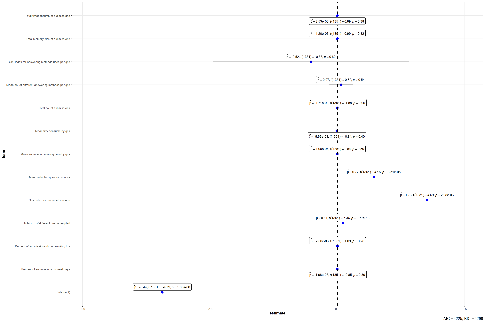
#b <-
ggcoefstats(model4,
output = "plot")#c <-
ggcoefstats(model5,
output = "plot")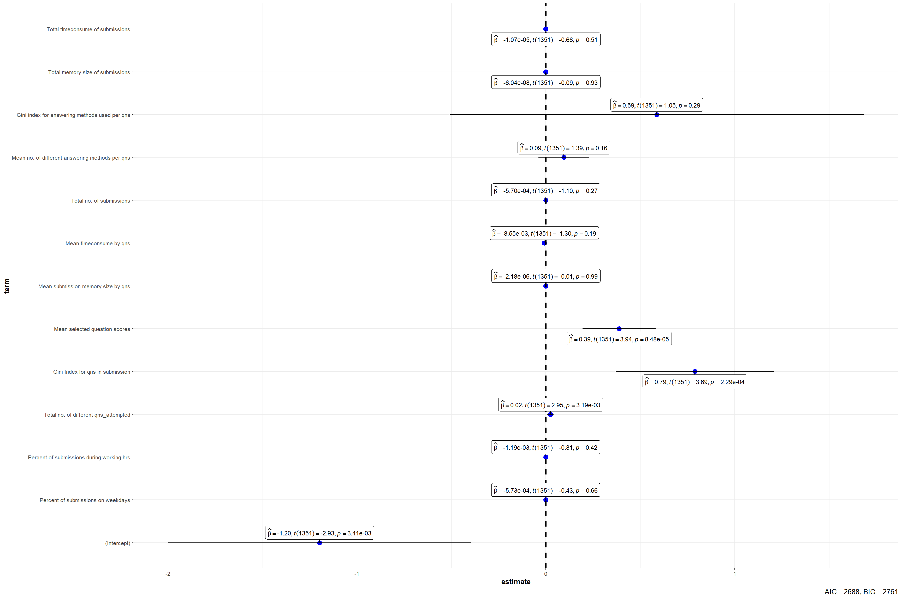
#d <-
ggcoefstats(model6,
output = "plot")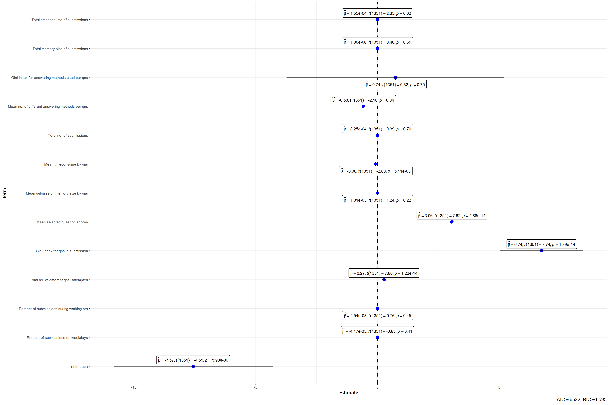
#e <-
ggcoefstats(model7,
output = "plot")#f <-
ggcoefstats(model8,
output = "plot")#g <-
ggcoefstats(model9,
output = "plot")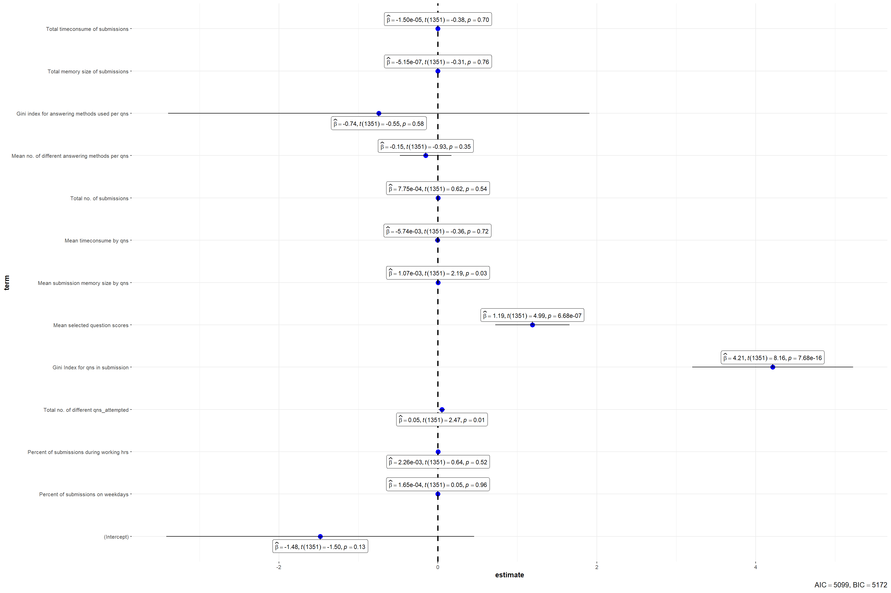
#h <-
ggcoefstats(model10,
output = "plot")#(a + b) / (c + d) / (e + f) / (g + h) Conclusion
In conclusion, the visual analysis of learning modes clustering found that 2 substantially distinct clusters can be formed using k-means clustering of the selected students’ learning mode features, whereby cluster 2 tends to be the more earnest learning mode cluster.
Considering the differences in the 2 clusters across the features in addition to the statistical differences in relation to the indicators of students’ knowledge acquisition it was found that
- attempting questions over a wider span of questions and different knowledge,
- attempting more demanding questions that required more effort,
- applying more effort in answer attempts
were congruent with knowledge acquisition in terms of higher scores, higher proportion of correct submissions and the use of more answering methods, especially for knowledge in g7R2j, m3D1v, t5V9e and y9W5.
Furthermore, from the multiple linear regression model fit, it was also discovered that,
- applying a more evenly spread effort across questions and
- attempting higher scoring questions
had a statistically more significant effect on overall points and scores.